Exercise 18： Let BSEC, ABDO and FCEO be parallelograms. SO=AO. Prove that BD=BF.
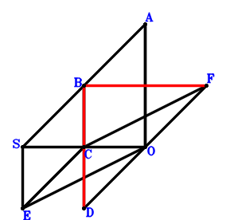
\(\because \) ABDO is a parallelogram \(\therefore \small\overrightarrow{OD}=- \small\overrightarrow{OA} + \small\overrightarrow{OB}\).\(\because \) BSEC is a parallelogram \(\therefore \small\overrightarrow{OE}=- \small\overrightarrow{OB} + \small\overrightarrow{OC} + \small\overrightarrow{OS}\).\(\because \) FCEO is a parallelogram \(\therefore \small\overrightarrow{OF}=\small\overrightarrow{OC} - \small\overrightarrow{OE}=\small\overrightarrow{OB} - \small\overrightarrow{OS}\).\(\because \) SO=AO \( \therefore- \small\overrightarrow{OA}^{2} + \small\overrightarrow{OS}^{2}=0.\)In conclusion, \(\small\overrightarrow{DB}^{2} - \small\overrightarrow{FB}^{2}=\left(\small\overrightarrow{OB} - \small\overrightarrow{OD}\right)^{2} - \left(\small\overrightarrow{OB} - \small\overrightarrow{OF}\right)^{2}=\small\overrightarrow{OA}^{2} - \small\overrightarrow{OS}^{2}=0\), that is, BD=BF.
Exercise 35： Let ACDO be a parallelogram. GEFB is a trapezoid with GB//EF and GB=2EF. F, E are the midpoints of BO, SC, respectively. SO=AO. Prove that CD=GC.
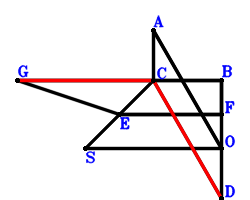
\(\because \) ACDO is a parallelogram \(\therefore \small\overrightarrow{OD}=- \small\overrightarrow{OA} + \small\overrightarrow{OC}\).\(\because \) E is the midpoint of SC \(\therefore \small\overrightarrow{OE}=\dfrac{\small\overrightarrow{OC}}{2} + \dfrac{\small\overrightarrow{OS}}{2}\).\(\because \) F is the midpoint of BO \(\therefore \small\overrightarrow{OF}=\dfrac{\small\overrightarrow{OB}}{2}\).\(\because \) GB//EF and GB=2EF \(\therefore \small\overrightarrow{OG}=2 \small\overrightarrow{OE}=\small\overrightarrow{OC} + \small\overrightarrow{OS}\).\(\because \) SO=AO \( \therefore- \small\overrightarrow{OA}^{2} + \small\overrightarrow{OS}^{2}=0.\)In conclusion, \(\small\overrightarrow{DC}^{2} - \small\overrightarrow{GC}^{2}=\left(\small\overrightarrow{OC} - \small\overrightarrow{OD}\right)^{2} - \left(\small\overrightarrow{OC} - \small\overrightarrow{OG}\right)^{2}=\small\overrightarrow{OA}^{2} - \small\overrightarrow{OS}^{2}=0\), that is, CD=GC.
Exercise 74： Let DCAO and BCSE be parallelograms. F, G are the midpoints of CE, BO, respectively. SO=OA. Prove that DC=2FG.
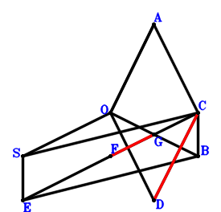
\(\because \) DCAO is a parallelogram \(\therefore \small\overrightarrow{OD}=- \small\overrightarrow{OA} + \small\overrightarrow{OC}\).\(\because \) BCSE is a parallelogram \(\therefore \small\overrightarrow{OE}=\small\overrightarrow{OB} - \small\overrightarrow{OC} + \small\overrightarrow{OS}\).\(\because \) F is the midpoint of CE \(\therefore \small\overrightarrow{OF}=\dfrac{\small\overrightarrow{OC}}{2} + \dfrac{\small\overrightarrow{OE}}{2}=\dfrac{\small\overrightarrow{OB}}{2} + \dfrac{\small\overrightarrow{OS}}{2}\).\(\because \) G is the midpoint of BO \(\therefore \small\overrightarrow{OG}=\dfrac{\small\overrightarrow{OB}}{2}\).\(\because \) SO=OA \( \therefore- \small\overrightarrow{OA}^{2} + \small\overrightarrow{OS}^{2}=0.\)In conclusion, \(\dfrac{\small\overrightarrow{DC}^{2}}{4} - \small\overrightarrow{FG}^{2}=\dfrac{\left(\small\overrightarrow{OC} - \small\overrightarrow{OD}\right)^{2}}{4} - \left(- \small\overrightarrow{OF} + \small\overrightarrow{OG}\right)^{2}=\dfrac{\small\overrightarrow{OA}^{2}}{4} - \dfrac{\small\overrightarrow{OS}^{2}}{4}=0\), that is, DC=2FG.
Exercise 97： Let FBSC and DBAO be parallelograms. E, G are the midpoints of BC, FO, respectively. SO=OA. Prove that DB=2EG.
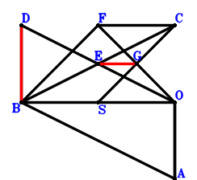
\(\because \) DBAO is a parallelogram \(\therefore \small\overrightarrow{OD}=- \small\overrightarrow{OA} + \small\overrightarrow{OB}\).\(\because \) E is the midpoint of BC \(\therefore \small\overrightarrow{OE}=\dfrac{\small\overrightarrow{OB}}{2} + \dfrac{\small\overrightarrow{OC}}{2}\).\(\because \) FBSC is a parallelogram \(\therefore \small\overrightarrow{OF}=\small\overrightarrow{OB} + \small\overrightarrow{OC} - \small\overrightarrow{OS}\).\(\because \) G is the midpoint of FO \(\therefore \small\overrightarrow{OG}=\dfrac{\small\overrightarrow{OF}}{2}=\dfrac{\small\overrightarrow{OB}}{2} + \dfrac{\small\overrightarrow{OC}}{2} - \dfrac{\small\overrightarrow{OS}}{2}\).\(\because \) SO=OA \( \therefore- \small\overrightarrow{OA}^{2} + \small\overrightarrow{OS}^{2}=0.\)In conclusion, \(\dfrac{\small\overrightarrow{DB}^{2}}{4} - \small\overrightarrow{EG}^{2}=\dfrac{\left(\small\overrightarrow{OB} - \small\overrightarrow{OD}\right)^{2}}{4} - \left(- \small\overrightarrow{OE} + \small\overrightarrow{OG}\right)^{2}=\dfrac{\small\overrightarrow{OA}^{2}}{4} - \dfrac{\small\overrightarrow{OS}^{2}}{4}=0\), that is, DB=2EG.
Exercise 231： Let CSOG and ECAF be parallelograms. EDOB is a trapezoid with EB//DO and EB=2DO. D is the midpoint of CO. SO=OA. Prove that BF=CG.
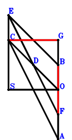
\(\because \) D is the midpoint of CO \(\therefore \small\overrightarrow{OD}=\dfrac{\small\overrightarrow{OC}}{2}\).\(\because \) EB//DO and EB=2DO \(\therefore \small\overrightarrow{OE}=\small\overrightarrow{OB} + 2 \small\overrightarrow{OD}=\small\overrightarrow{OB} + \small\overrightarrow{OC}\).\(\because \) ECAF is a parallelogram \(\therefore \small\overrightarrow{OF}=\small\overrightarrow{OA} + \small\overrightarrow{OB}\).\(\because \) CSOG is a parallelogram \(\therefore \small\overrightarrow{OG}=\small\overrightarrow{OC} - \small\overrightarrow{OS}\).\(\because \) SO=OA \( \therefore- \small\overrightarrow{OA}^{2} + \small\overrightarrow{OS}^{2}=0.\)In conclusion, \(\small\overrightarrow{FB}^{2} - \small\overrightarrow{GC}^{2}=\left(\small\overrightarrow{OB} - \small\overrightarrow{OF}\right)^{2} - \left(\small\overrightarrow{OC} - \small\overrightarrow{OG}\right)^{2}=\small\overrightarrow{OA}^{2} - \small\overrightarrow{OS}^{2}=0\), that is, BF=CG.
Exercise 268： Let BSOF be a parallelogram. EDOA is a trapezoid with EA//DO and EA=2DO. D is the midpoint of CO. SO=AO. Prove that EC=BF.
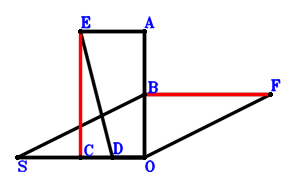
\(\because \) D is the midpoint of CO \(\therefore \small\overrightarrow{OD}=\dfrac{\small\overrightarrow{OC}}{2}\).\(\because \) EA//DO and EA=2DO \(\therefore \small\overrightarrow{OE}=\small\overrightarrow{OA} + 2 \small\overrightarrow{OD}=\small\overrightarrow{OA} + \small\overrightarrow{OC}\).\(\because \) BSOF is a parallelogram \(\therefore \small\overrightarrow{OF}=\small\overrightarrow{OB} - \small\overrightarrow{OS}\).\(\because \) SO=AO \( \therefore- \small\overrightarrow{OA}^{2} + \small\overrightarrow{OS}^{2}=0.\)In conclusion, \(\small\overrightarrow{EC}^{2} - \small\overrightarrow{FB}^{2}=- \left(\small\overrightarrow{OB} - \small\overrightarrow{OF}\right)^{2} + \left(\small\overrightarrow{OC} - \small\overrightarrow{OE}\right)^{2}=\small\overrightarrow{OA}^{2} - \small\overrightarrow{OS}^{2}=0\), that is, EC=BF.
Exercise 464： Let GSOB and GHCB be parallelograms. FCED is a trapezoid with FC//DE and FC=2DE. D, E are the midpoints of BO, BA, respectively. SO=OA. Prove that FC=HC.
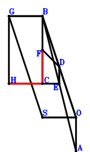
\(\because \) D is the midpoint of BO \(\therefore \small\overrightarrow{OD}=\dfrac{\small\overrightarrow{OB}}{2}\).\(\because \) E is the midpoint of BA \(\therefore \small\overrightarrow{OE}=\dfrac{\small\overrightarrow{OA}}{2} + \dfrac{\small\overrightarrow{OB}}{2}\).\(\because \) FC//DE and FC=2DE \(\therefore \small\overrightarrow{OF}=- \small\overrightarrow{OA} - \small\overrightarrow{OB} + \small\overrightarrow{OC} + 2 \small\overrightarrow{OD}=- \small\overrightarrow{OA} + \small\overrightarrow{OC}\).\(\because \) GSOB is a parallelogram \(\therefore \small\overrightarrow{OG}=\small\overrightarrow{OB} + \small\overrightarrow{OS}\).\(\because \) GHCB is a parallelogram \(\therefore \small\overrightarrow{OH}=\small\overrightarrow{OC} + \small\overrightarrow{OS}\).\(\because \) SO=OA \( \therefore- \small\overrightarrow{OA}^{2} + \small\overrightarrow{OS}^{2}=0.\)In conclusion, \(\small\overrightarrow{FC}^{2} - \small\overrightarrow{HC}^{2}=\left(\small\overrightarrow{OC} - \small\overrightarrow{OF}\right)^{2} - \left(\small\overrightarrow{OC} - \small\overrightarrow{OH}\right)^{2}=\small\overrightarrow{OA}^{2} - \small\overrightarrow{OS}^{2}=0\), that is, FC=HC.
Exercise 542： Let FCDE be a trapezoid with FC//ED and FC=2ED. HSOG is a trapezoid with SO//HG and SO=2HG. D, E, G are the midpoints of BO, BA, CB, respectively. SO=AO. Prove that FC=2HG.
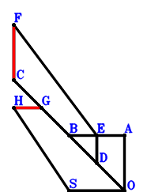
\(\because \) D is the midpoint of BO \(\therefore \small\overrightarrow{OD}=\dfrac{\small\overrightarrow{OB}}{2}\).\(\because \) E is the midpoint of BA \(\therefore \small\overrightarrow{OE}=\dfrac{\small\overrightarrow{OA}}{2} + \dfrac{\small\overrightarrow{OB}}{2}\).\(\because \) FC//ED and FC=2ED \(\therefore \small\overrightarrow{OF}=\small\overrightarrow{OA} + \small\overrightarrow{OB} + \small\overrightarrow{OC} - 2 \small\overrightarrow{OD}=\small\overrightarrow{OA} + \small\overrightarrow{OC}\).\(\because \) G is the midpoint of CB \(\therefore \small\overrightarrow{OG}=\dfrac{\small\overrightarrow{OB}}{2} + \dfrac{\small\overrightarrow{OC}}{2}\).\(\because \) SO//HG and SO=2HG \(\therefore \small\overrightarrow{OH}=\dfrac{\small\overrightarrow{OB}}{2} + \dfrac{\small\overrightarrow{OC}}{2} + \dfrac{\small\overrightarrow{OS}}{2}\).\(\because \) SO=AO \( \therefore- \small\overrightarrow{OA}^{2} + \small\overrightarrow{OS}^{2}=0.\)In conclusion, \(\dfrac{\small\overrightarrow{CF}^{2}}{4} - \small\overrightarrow{HG}^{2}=\dfrac{\left(- \small\overrightarrow{OC} + \small\overrightarrow{OF}\right)^{2}}{4} - \left(\small\overrightarrow{OG} - \small\overrightarrow{OH}\right)^{2}=\dfrac{\small\overrightarrow{OA}^{2}}{4} - \dfrac{\small\overrightarrow{OS}^{2}}{4}=0\), that is, FC=2HG.
Exercise 1164： Let BCOE be a parallelogram. BCOD is a trapezoid with CB//OD and CB=2OD. G is the centroid of △BCS. C, G, H are collinear and CH=3GH. I, F are the midpoints of BO, AE, respectively. SO=OA. Prove that DF=HI.
\(\because \) CB//OD and CB=2OD \(\therefore \small\overrightarrow{OD}=\dfrac{\small\overrightarrow{OB}}{2} - \dfrac{\small\overrightarrow{OC}}{2}\).\(\because \) BCOE is a parallelogram \(\therefore \small\overrightarrow{OE}=\small\overrightarrow{OB} - \small\overrightarrow{OC}\).\(\because \) F is the midpoint of AE \(\therefore \small\overrightarrow{OF}=\dfrac{\small\overrightarrow{OA}}{2} + \dfrac{\small\overrightarrow{OE}}{2}=\dfrac{\small\overrightarrow{OA}}{2} + \dfrac{\small\overrightarrow{OB}}{2} - \dfrac{\small\overrightarrow{OC}}{2}\).\(\because \) G is the centroid of △BCS \(\therefore \small\overrightarrow{OG}=\dfrac{\small\overrightarrow{OB}}{3} + \dfrac{\small\overrightarrow{OC}}{3} + \dfrac{\small\overrightarrow{OS}}{3}\).\(\because \) C, G, H are collinear and CH=3GH \(\therefore \small\overrightarrow{OH}=- \dfrac{\small\overrightarrow{OC}}{2} + \dfrac{3 \small\overrightarrow{OG}}{2}=\dfrac{\small\overrightarrow{OB}}{2} + \dfrac{\small\overrightarrow{OS}}{2}\).\(\because \) I is the midpoint of BO \(\therefore \small\overrightarrow{OI}=\dfrac{\small\overrightarrow{OB}}{2}\).\(\because \) SO=OA \( \therefore- \small\overrightarrow{OA}^{2} + \small\overrightarrow{OS}^{2}=0.\)In conclusion, \(\small\overrightarrow{DF}^{2} - \small\overrightarrow{HI}^{2}=\left(- \small\overrightarrow{OD} + \small\overrightarrow{OF}\right)^{2} - \left(- \small\overrightarrow{OH} + \small\overrightarrow{OI}\right)^{2}=\dfrac{\small\overrightarrow{OA}^{2}}{4} - \dfrac{\small\overrightarrow{OS}^{2}}{4}=0\), that is, DF=HI.
Exercise 1462： Let DOBA be a parallelogram. E, G, F are the midpoints of DB, OB, BS, respectively. OS=OA. Prove that OE=GF.
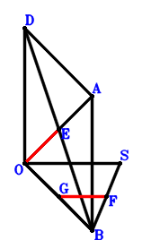
\(\because \) DOBA is a parallelogram \(\therefore \small\overrightarrow{OD}=\small\overrightarrow{OA} - \small\overrightarrow{OB}\).\(\because \) E is the midpoint of DB \(\therefore \small\overrightarrow{OE}=\dfrac{\small\overrightarrow{OB}}{2} + \dfrac{\small\overrightarrow{OD}}{2}=\dfrac{\small\overrightarrow{OA}}{2}\).\(\because \) F is the midpoint of BS \(\therefore \small\overrightarrow{OF}=\dfrac{\small\overrightarrow{OB}}{2} + \dfrac{\small\overrightarrow{OS}}{2}\).\(\because \) G is the midpoint of OB \(\therefore \small\overrightarrow{OG}=\dfrac{\small\overrightarrow{OB}}{2}\).\(\because \) OS=OA \( \therefore- \small\overrightarrow{OA}^{2} + \small\overrightarrow{OS}^{2}=0.\)In conclusion, \(- \small\overrightarrow{FG}^{2} + \small\overrightarrow{OE}^{2}=\small\overrightarrow{OE}^{2} - \left(- \small\overrightarrow{OF} + \small\overrightarrow{OG}\right)^{2}=\dfrac{\small\overrightarrow{OA}^{2}}{4} - \dfrac{\small\overrightarrow{OS}^{2}}{4}=0\), that is, OE=GF.
Exercise 1501： Let ABOD be a parallelogram. GBOF is a trapezoid with BO//GF and BO=2GF. H, F, E are the midpoints of CB, SC, BD, respectively. SO=AO. Prove that EO=GH.
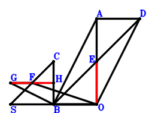
\(\because \) ABOD is a parallelogram \(\therefore \small\overrightarrow{OD}=\small\overrightarrow{OA} - \small\overrightarrow{OB}\).\(\because \) E is the midpoint of BD \(\therefore \small\overrightarrow{OE}=\dfrac{\small\overrightarrow{OB}}{2} + \dfrac{\small\overrightarrow{OD}}{2}=\dfrac{\small\overrightarrow{OA}}{2}\).\(\because \) F is the midpoint of SC \(\therefore \small\overrightarrow{OF}=\dfrac{\small\overrightarrow{OC}}{2} + \dfrac{\small\overrightarrow{OS}}{2}\).\(\because \) BO//GF and BO=2GF \(\therefore \small\overrightarrow{OG}=\dfrac{\small\overrightarrow{OB}}{2} + \dfrac{\small\overrightarrow{OC}}{2} + \dfrac{\small\overrightarrow{OS}}{2}\).\(\because \) H is the midpoint of CB \(\therefore \small\overrightarrow{OH}=\dfrac{\small\overrightarrow{OB}}{2} + \dfrac{\small\overrightarrow{OC}}{2}\).\(\because \) SO=AO \( \therefore- \small\overrightarrow{OA}^{2} + \small\overrightarrow{OS}^{2}=0.\)In conclusion, \(- \small\overrightarrow{GH}^{2} + \small\overrightarrow{OE}^{2}=\small\overrightarrow{OE}^{2} - \left(- \small\overrightarrow{OG} + \small\overrightarrow{OH}\right)^{2}=\dfrac{\small\overrightarrow{OA}^{2}}{4} - \dfrac{\small\overrightarrow{OS}^{2}}{4}=0\), that is, EO=GH.
Exercise 1540： Let CSOF be a parallelogram. D is the centroid of △COA. C, D, E are collinear and CE=3DE. SO=OA. Prove that CF=2OE.
\(\because \) D is the centroid of △COA \(\therefore \small\overrightarrow{OD}=\dfrac{\small\overrightarrow{OA}}{3} + \dfrac{\small\overrightarrow{OC}}{3}\).\(\because \) C, D, E are collinear and CE=3DE \(\therefore \small\overrightarrow{OE}=- \dfrac{\small\overrightarrow{OC}}{2} + \dfrac{3 \small\overrightarrow{OD}}{2}=\dfrac{\small\overrightarrow{OA}}{2}\).\(\because \) CSOF is a parallelogram \(\therefore \small\overrightarrow{OF}=\small\overrightarrow{OC} - \small\overrightarrow{OS}\).\(\because \) SO=OA \( \therefore- \small\overrightarrow{OA}^{2} + \small\overrightarrow{OS}^{2}=0.\)In conclusion, \(- \dfrac{\small\overrightarrow{CF}^{2}}{4} + \small\overrightarrow{OE}^{2}=\small\overrightarrow{OE}^{2} - \dfrac{\left(- \small\overrightarrow{OC} + \small\overrightarrow{OF}\right)^{2}}{4}=\dfrac{\small\overrightarrow{OA}^{2}}{4} - \dfrac{\small\overrightarrow{OS}^{2}}{4}=0\), that is, CF=2OE.
Exercise 1607： Let FBOC be a parallelogram. D is the centroid of △BAO. B, D, E are collinear and BE=3DE. G, H are the midpoints of FS, BC, respectively. OS=OA. Prove that OE=HG.
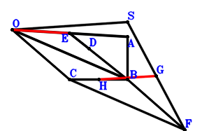
\(\because \) D is the centroid of △BAO \(\therefore \small\overrightarrow{OD}=\dfrac{\small\overrightarrow{OA}}{3} + \dfrac{\small\overrightarrow{OB}}{3}\).\(\because \) B, D, E are collinear and BE=3DE \(\therefore \small\overrightarrow{OE}=- \dfrac{\small\overrightarrow{OB}}{2} + \dfrac{3 \small\overrightarrow{OD}}{2}=\dfrac{\small\overrightarrow{OA}}{2}\).\(\because \) FBOC is a parallelogram \(\therefore \small\overrightarrow{OF}=\small\overrightarrow{OB} + \small\overrightarrow{OC}\).\(\because \) G is the midpoint of FS \(\therefore \small\overrightarrow{OG}=\dfrac{\small\overrightarrow{OF}}{2} + \dfrac{\small\overrightarrow{OS}}{2}=\dfrac{\small\overrightarrow{OB}}{2} + \dfrac{\small\overrightarrow{OC}}{2} + \dfrac{\small\overrightarrow{OS}}{2}\).\(\because \) H is the midpoint of BC \(\therefore \small\overrightarrow{OH}=\dfrac{\small\overrightarrow{OB}}{2} + \dfrac{\small\overrightarrow{OC}}{2}\).\(\because \) OS=OA \( \therefore- \small\overrightarrow{OA}^{2} + \small\overrightarrow{OS}^{2}=0.\)In conclusion, \(- \small\overrightarrow{GH}^{2} + \small\overrightarrow{OE}^{2}=\small\overrightarrow{OE}^{2} - \left(- \small\overrightarrow{OG} + \small\overrightarrow{OH}\right)^{2}=\dfrac{\small\overrightarrow{OA}^{2}}{4} - \dfrac{\small\overrightarrow{OS}^{2}}{4}=0\), that is, OE=HG.
Exercise 1630： Let CBOG be a parallelogram. D is the centroid of △BAO. B, D, E are collinear and BE=3DE. H, F are the midpoints of BG, CS, respectively. OS=OA. Prove that OE=HF.
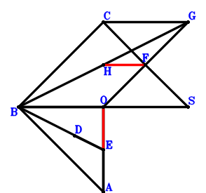
\(\because \) D is the centroid of △BAO \(\therefore \small\overrightarrow{OD}=\dfrac{\small\overrightarrow{OA}}{3} + \dfrac{\small\overrightarrow{OB}}{3}\).\(\because \) B, D, E are collinear and BE=3DE \(\therefore \small\overrightarrow{OE}=- \dfrac{\small\overrightarrow{OB}}{2} + \dfrac{3 \small\overrightarrow{OD}}{2}=\dfrac{\small\overrightarrow{OA}}{2}\).\(\because \) F is the midpoint of CS \(\therefore \small\overrightarrow{OF}=\dfrac{\small\overrightarrow{OC}}{2} + \dfrac{\small\overrightarrow{OS}}{2}\).\(\because \) CBOG is a parallelogram \(\therefore \small\overrightarrow{OG}=- \small\overrightarrow{OB} + \small\overrightarrow{OC}\).\(\because \) H is the midpoint of BG \(\therefore \small\overrightarrow{OH}=\dfrac{\small\overrightarrow{OB}}{2} + \dfrac{\small\overrightarrow{OG}}{2}=\dfrac{\small\overrightarrow{OC}}{2}\).\(\because \) OS=OA \( \therefore- \small\overrightarrow{OA}^{2} + \small\overrightarrow{OS}^{2}=0.\)In conclusion, \(- \small\overrightarrow{FH}^{2} + \small\overrightarrow{OE}^{2}=\small\overrightarrow{OE}^{2} - \left(- \small\overrightarrow{OF} + \small\overrightarrow{OH}\right)^{2}=\dfrac{\small\overrightarrow{OA}^{2}}{4} - \dfrac{\small\overrightarrow{OS}^{2}}{4}=0\), that is, OE=HF.
Exercise 1683： Let HCGF be a trapezoid with HC//FG and HC=2FG. D, E, F, G are the midpoints of BO, BA, SB, CO, respectively. SO=OA. Prove that HB=2DE.
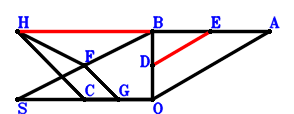
\(\because \) D is the midpoint of BO \(\therefore \small\overrightarrow{OD}=\dfrac{\small\overrightarrow{OB}}{2}\).\(\because \) E is the midpoint of BA \(\therefore \small\overrightarrow{OE}=\dfrac{\small\overrightarrow{OA}}{2} + \dfrac{\small\overrightarrow{OB}}{2}\).\(\because \) F is the midpoint of SB \(\therefore \small\overrightarrow{OF}=\dfrac{\small\overrightarrow{OB}}{2} + \dfrac{\small\overrightarrow{OS}}{2}\).\(\because \) G is the midpoint of CO \(\therefore \small\overrightarrow{OG}=\dfrac{\small\overrightarrow{OC}}{2}\).\(\because \) HC//FG and HC=2FG \(\therefore \small\overrightarrow{OH}=2 \small\overrightarrow{OF}=\small\overrightarrow{OB} + \small\overrightarrow{OS}\).\(\because \) SO=OA \( \therefore- \small\overrightarrow{OA}^{2} + \small\overrightarrow{OS}^{2}=0.\)In conclusion, \(\small\overrightarrow{DE}^{2} - \dfrac{\small\overrightarrow{HB}^{2}}{4}=- \dfrac{\left(\small\overrightarrow{OB} - \small\overrightarrow{OH}\right)^{2}}{4} + \left(- \small\overrightarrow{OD} + \small\overrightarrow{OE}\right)^{2}=\dfrac{\small\overrightarrow{OA}^{2}}{4} - \dfrac{\small\overrightarrow{OS}^{2}}{4}=0\), that is, HB=2DE.
Exercise 1748： Let F, E be the midpoints of BS, BA, respectively. D is the midpoint of BO and GC. OS=OA. Prove that DE=DF.
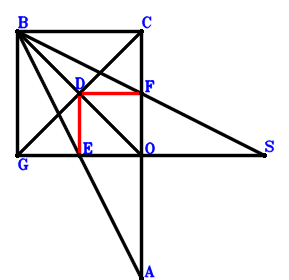
\(\because \) D is the midpoint of BO \(\therefore \small\overrightarrow{OD}=\dfrac{\small\overrightarrow{OB}}{2}\).\(\because \) E is the midpoint of BA \(\therefore \small\overrightarrow{OE}=\dfrac{\small\overrightarrow{OA}}{2} + \dfrac{\small\overrightarrow{OB}}{2}\).\(\because \) F is the midpoint of BS \(\therefore \small\overrightarrow{OF}=\dfrac{\small\overrightarrow{OB}}{2} + \dfrac{\small\overrightarrow{OS}}{2}\).\(\because \) BGOC is a parallelogram \(\therefore \small\overrightarrow{OG}=\small\overrightarrow{OB} - \small\overrightarrow{OC}\).\(\because \) D is the midpoint of GC \( \therefore- \small\overrightarrow{OA}^{2} + \small\overrightarrow{OS}^{2}=0.\)In conclusion, \(\small\overrightarrow{DE}^{2} - \small\overrightarrow{FD}^{2}=\left(- \small\overrightarrow{OD} + \small\overrightarrow{OE}\right)^{2} - \left(\small\overrightarrow{OD} - \small\overrightarrow{OF}\right)^{2}=\dfrac{\small\overrightarrow{OA}^{2}}{4} - \dfrac{\small\overrightarrow{OS}^{2}}{4}=0\), that is, DE=DF.
Exercise 1785： Let HBOG and CBSG be parallelograms. D is the centroid of △CBO. E, D, A are collinear and EA=3ED. F is the midpoint of BC. SO=AO. Prove that HC=2FE.
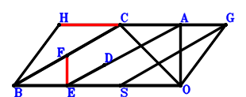
\(\because \) D is the centroid of △CBO \(\therefore \small\overrightarrow{OD}=\dfrac{\small\overrightarrow{OB}}{3} + \dfrac{\small\overrightarrow{OC}}{3}\).\(\because \) E, D, A are collinear and EA=3ED \(\therefore \small\overrightarrow{OE}=- \dfrac{\small\overrightarrow{OA}}{2} + \dfrac{3 \small\overrightarrow{OD}}{2}=- \dfrac{\small\overrightarrow{OA}}{2} + \dfrac{\small\overrightarrow{OB}}{2} + \dfrac{\small\overrightarrow{OC}}{2}\).\(\because \) F is the midpoint of BC \(\therefore \small\overrightarrow{OF}=\dfrac{\small\overrightarrow{OB}}{2} + \dfrac{\small\overrightarrow{OC}}{2}\).\(\because \) CBSG is a parallelogram \(\therefore \small\overrightarrow{OG}=- \small\overrightarrow{OB} + \small\overrightarrow{OC} + \small\overrightarrow{OS}\).\(\because \) HBOG is a parallelogram \(\therefore \small\overrightarrow{OH}=\small\overrightarrow{OC} + \small\overrightarrow{OS}\).\(\because \) SO=AO \( \therefore- \small\overrightarrow{OA}^{2} + \small\overrightarrow{OS}^{2}=0.\)In conclusion, \(\small\overrightarrow{EF}^{2} - \dfrac{\small\overrightarrow{HC}^{2}}{4}=- \dfrac{\left(\small\overrightarrow{OC} - \small\overrightarrow{OH}\right)^{2}}{4} + \left(- \small\overrightarrow{OE} + \small\overrightarrow{OF}\right)^{2}=\dfrac{\small\overrightarrow{OA}^{2}}{4} - \dfrac{\small\overrightarrow{OS}^{2}}{4}=0\), that is, HC=2FE.
Exercise 1912： Let DBEO be a trapezoid with BE//DO and BE=2DO. F, H, D, G are the midpoints of EC, SC, CO, AB, respectively. SO=AO. Prove that GF=HD.
\(\because \) D is the midpoint of CO \(\therefore \small\overrightarrow{OD}=\dfrac{\small\overrightarrow{OC}}{2}\).\(\because \) BE//DO and BE=2DO \(\therefore \small\overrightarrow{OE}=\small\overrightarrow{OB} - 2 \small\overrightarrow{OD}=\small\overrightarrow{OB} - \small\overrightarrow{OC}\).\(\because \) F is the midpoint of EC \(\therefore \small\overrightarrow{OF}=\dfrac{\small\overrightarrow{OC}}{2} + \dfrac{\small\overrightarrow{OE}}{2}=\dfrac{\small\overrightarrow{OB}}{2}\).\(\because \) G is the midpoint of AB \(\therefore \small\overrightarrow{OG}=\dfrac{\small\overrightarrow{OA}}{2} + \dfrac{\small\overrightarrow{OB}}{2}\).\(\because \) H is the midpoint of SC \(\therefore \small\overrightarrow{OH}=\dfrac{\small\overrightarrow{OC}}{2} + \dfrac{\small\overrightarrow{OS}}{2}\).\(\because \) D is the midpoint of CO \( \therefore- \small\overrightarrow{OA}^{2} + \small\overrightarrow{OS}^{2}=0.\)In conclusion, \(\small\overrightarrow{FG}^{2} - \small\overrightarrow{HD}^{2}=- \left(\small\overrightarrow{OD} - \small\overrightarrow{OH}\right)^{2} + \left(- \small\overrightarrow{OF} + \small\overrightarrow{OG}\right)^{2}=\dfrac{\small\overrightarrow{OA}^{2}}{4} - \dfrac{\small\overrightarrow{OS}^{2}}{4}=0\), that is, GF=HD.
Exercise 1967： Let DCEO be a trapezoid with CE//DO and CE=2DO. I is the centroid of △BCO. C, I, D are collinear and CD=3ID. F, D, G, H are the midpoints of EB, BO, CA, BS, respectively. OS=OA. Prove that FG=DH.
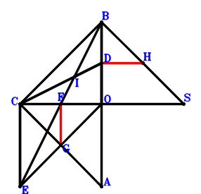
\(\because \) D is the midpoint of BO \(\therefore \small\overrightarrow{OD}=\dfrac{\small\overrightarrow{OB}}{2}\).\(\because \) CE//DO and CE=2DO \(\therefore \small\overrightarrow{OE}=\small\overrightarrow{OC} - 2 \small\overrightarrow{OD}=- \small\overrightarrow{OB} + \small\overrightarrow{OC}\).\(\because \) F is the midpoint of EB \(\therefore \small\overrightarrow{OF}=\dfrac{\small\overrightarrow{OB}}{2} + \dfrac{\small\overrightarrow{OE}}{2}=\dfrac{\small\overrightarrow{OC}}{2}\).\(\because \) G is the midpoint of CA \(\therefore \small\overrightarrow{OG}=\dfrac{\small\overrightarrow{OA}}{2} + \dfrac{\small\overrightarrow{OC}}{2}\).\(\because \) H is the midpoint of BS \(\therefore \small\overrightarrow{OH}=\dfrac{\small\overrightarrow{OB}}{2} + \dfrac{\small\overrightarrow{OS}}{2}\).\(\because \) I is the centroid of △BCO \(\therefore \small\overrightarrow{OI}=\dfrac{\small\overrightarrow{OB}}{3} + \dfrac{\small\overrightarrow{OC}}{3}\).\(\because \) C, I, D are collinear and CD=3ID \( \therefore- \small\overrightarrow{OA}^{2} + \small\overrightarrow{OS}^{2}=0.\)In conclusion, \(\small\overrightarrow{FG}^{2} - \small\overrightarrow{HD}^{2}=- \left(\small\overrightarrow{OD} - \small\overrightarrow{OH}\right)^{2} + \left(- \small\overrightarrow{OF} + \small\overrightarrow{OG}\right)^{2}=\dfrac{\small\overrightarrow{OA}^{2}}{4} - \dfrac{\small\overrightarrow{OS}^{2}}{4}=0\), that is, FG=DH.
Exercise 2120： Let ABDO and CSOG be parallelograms. E, F are the midpoints of DC, BC, respectively. SO=AO. Prove that CG=2FE.
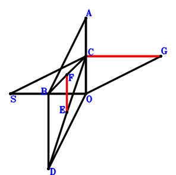
\(\because \) ABDO is a parallelogram \(\therefore \small\overrightarrow{OD}=- \small\overrightarrow{OA} + \small\overrightarrow{OB}\).\(\because \) E is the midpoint of DC \(\therefore \small\overrightarrow{OE}=\dfrac{\small\overrightarrow{OC}}{2} + \dfrac{\small\overrightarrow{OD}}{2}=- \dfrac{\small\overrightarrow{OA}}{2} + \dfrac{\small\overrightarrow{OB}}{2} + \dfrac{\small\overrightarrow{OC}}{2}\).\(\because \) F is the midpoint of BC \(\therefore \small\overrightarrow{OF}=\dfrac{\small\overrightarrow{OB}}{2} + \dfrac{\small\overrightarrow{OC}}{2}\).\(\because \) CSOG is a parallelogram \(\therefore \small\overrightarrow{OG}=\small\overrightarrow{OC} - \small\overrightarrow{OS}\).\(\because \) SO=AO \( \therefore- \small\overrightarrow{OA}^{2} + \small\overrightarrow{OS}^{2}=0.\)In conclusion, \(- \dfrac{\small\overrightarrow{CG}^{2}}{4} + \small\overrightarrow{EF}^{2}=- \dfrac{\left(- \small\overrightarrow{OC} + \small\overrightarrow{OG}\right)^{2}}{4} + \left(- \small\overrightarrow{OE} + \small\overrightarrow{OF}\right)^{2}=\dfrac{\small\overrightarrow{OA}^{2}}{4} - \dfrac{\small\overrightarrow{OS}^{2}}{4}=0\), that is, CG=2FE.
Exercise 2139： Let DCAB, GSOC and GBHC be parallelograms. E, F are the midpoints of OD, CB, respectively. SO=OA. Prove that BH=2EF.
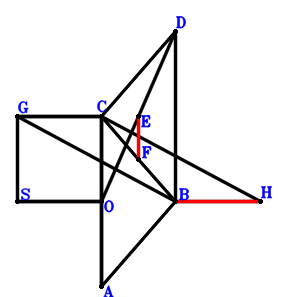
\(\because \) DCAB is a parallelogram \(\therefore \small\overrightarrow{OD}=- \small\overrightarrow{OA} + \small\overrightarrow{OB} + \small\overrightarrow{OC}\).\(\because \) E is the midpoint of OD \(\therefore \small\overrightarrow{OE}=\dfrac{\small\overrightarrow{OD}}{2}=- \dfrac{\small\overrightarrow{OA}}{2} + \dfrac{\small\overrightarrow{OB}}{2} + \dfrac{\small\overrightarrow{OC}}{2}\).\(\because \) F is the midpoint of CB \(\therefore \small\overrightarrow{OF}=\dfrac{\small\overrightarrow{OB}}{2} + \dfrac{\small\overrightarrow{OC}}{2}\).\(\because \) GSOC is a parallelogram \(\therefore \small\overrightarrow{OG}=\small\overrightarrow{OC} + \small\overrightarrow{OS}\).\(\because \) GBHC is a parallelogram \(\therefore \small\overrightarrow{OH}=\small\overrightarrow{OB} + \small\overrightarrow{OC} - \small\overrightarrow{OG}=\small\overrightarrow{OB} - \small\overrightarrow{OS}\).\(\because \) SO=OA \( \therefore- \small\overrightarrow{OA}^{2} + \small\overrightarrow{OS}^{2}=0.\)In conclusion, \(- \dfrac{\small\overrightarrow{BH}^{2}}{4} + \small\overrightarrow{EF}^{2}=- \dfrac{\left(- \small\overrightarrow{OB} + \small\overrightarrow{OH}\right)^{2}}{4} + \left(- \small\overrightarrow{OE} + \small\overrightarrow{OF}\right)^{2}=\dfrac{\small\overrightarrow{OA}^{2}}{4} - \dfrac{\small\overrightarrow{OS}^{2}}{4}=0\), that is, BH=2EF.
Exercise 2154： Let ABDC be a parallelogram. H, E, G, F are the midpoints of BO, DO, BS, BC, respectively. OS=OA. Prove that EF=HG.
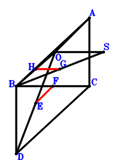
\(\because \) ABDC is a parallelogram \(\therefore \small\overrightarrow{OD}=- \small\overrightarrow{OA} + \small\overrightarrow{OB} + \small\overrightarrow{OC}\).\(\because \) E is the midpoint of DO \(\therefore \small\overrightarrow{OE}=\dfrac{\small\overrightarrow{OD}}{2}=- \dfrac{\small\overrightarrow{OA}}{2} + \dfrac{\small\overrightarrow{OB}}{2} + \dfrac{\small\overrightarrow{OC}}{2}\).\(\because \) F is the midpoint of BC \(\therefore \small\overrightarrow{OF}=\dfrac{\small\overrightarrow{OB}}{2} + \dfrac{\small\overrightarrow{OC}}{2}\).\(\because \) G is the midpoint of BS \(\therefore \small\overrightarrow{OG}=\dfrac{\small\overrightarrow{OB}}{2} + \dfrac{\small\overrightarrow{OS}}{2}\).\(\because \) H is the midpoint of BO \(\therefore \small\overrightarrow{OH}=\dfrac{\small\overrightarrow{OB}}{2}\).\(\because \) OS=OA \( \therefore- \small\overrightarrow{OA}^{2} + \small\overrightarrow{OS}^{2}=0.\)In conclusion, \(\small\overrightarrow{EF}^{2} - \small\overrightarrow{GH}^{2}=\left(- \small\overrightarrow{OE} + \small\overrightarrow{OF}\right)^{2} - \left(- \small\overrightarrow{OG} + \small\overrightarrow{OH}\right)^{2}=\dfrac{\small\overrightarrow{OA}^{2}}{4} - \dfrac{\small\overrightarrow{OS}^{2}}{4}=0\), that is, EF=HG.
Exercise 2261： Let FSOC be a parallelogram. CDOA is a trapezoid with CA//DO and CA=2DO. E is the midpoint of CO. SO=AO. Prove that FC=2ED.
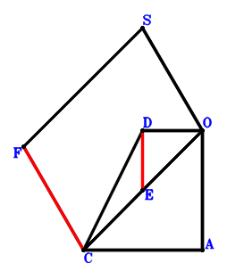
\(\because \) CA//DO and CA=2DO \(\therefore \small\overrightarrow{OD}=- \dfrac{\small\overrightarrow{OA}}{2} + \dfrac{\small\overrightarrow{OC}}{2}\).\(\because \) E is the midpoint of CO \(\therefore \small\overrightarrow{OE}=\dfrac{\small\overrightarrow{OC}}{2}\).\(\because \) FSOC is a parallelogram \(\therefore \small\overrightarrow{OF}=\small\overrightarrow{OC} + \small\overrightarrow{OS}\).\(\because \) SO=AO \( \therefore- \small\overrightarrow{OA}^{2} + \small\overrightarrow{OS}^{2}=0.\)In conclusion, \(\small\overrightarrow{DE}^{2} - \dfrac{\small\overrightarrow{FC}^{2}}{4}=- \dfrac{\left(\small\overrightarrow{OC} - \small\overrightarrow{OF}\right)^{2}}{4} + \left(- \small\overrightarrow{OD} + \small\overrightarrow{OE}\right)^{2}=\dfrac{\small\overrightarrow{OA}^{2}}{4} - \dfrac{\small\overrightarrow{OS}^{2}}{4}=0\), that is, FC=2ED.
Exercise 2267： Let FBOC and GSBF be parallelograms. ACDO is a trapezoid with CA//DO and CA=2DO. E is the midpoint of CO. SO=AO. Prove that GC=2ED.
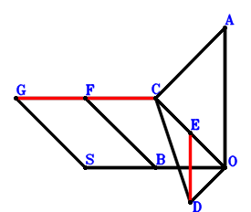
\(\because \) CA//DO and CA=2DO \(\therefore \small\overrightarrow{OD}=- \dfrac{\small\overrightarrow{OA}}{2} + \dfrac{\small\overrightarrow{OC}}{2}\).\(\because \) E is the midpoint of CO \(\therefore \small\overrightarrow{OE}=\dfrac{\small\overrightarrow{OC}}{2}\).\(\because \) FBOC is a parallelogram \(\therefore \small\overrightarrow{OF}=\small\overrightarrow{OB} + \small\overrightarrow{OC}\).\(\because \) GSBF is a parallelogram \(\therefore \small\overrightarrow{OG}=\small\overrightarrow{OC} + \small\overrightarrow{OS}\).\(\because \) SO=AO \( \therefore- \small\overrightarrow{OA}^{2} + \small\overrightarrow{OS}^{2}=0.\)In conclusion, \(\small\overrightarrow{DE}^{2} - \dfrac{\small\overrightarrow{GC}^{2}}{4}=- \dfrac{\left(\small\overrightarrow{OC} - \small\overrightarrow{OG}\right)^{2}}{4} + \left(- \small\overrightarrow{OD} + \small\overrightarrow{OE}\right)^{2}=\dfrac{\small\overrightarrow{OA}^{2}}{4} - \dfrac{\small\overrightarrow{OS}^{2}}{4}=0\), that is, GC=2ED.
Exercise 2332： Let ABDO be a trapezoid with AB//OD and AB=2OD. GBOF is a trapezoid with BO//GF and BO=2GF. F, E, H are the midpoints of SC, BO, BC, respectively. SO=AO. Prove that ED=GH.
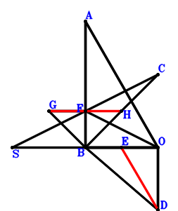
\(\because \) AB//OD and AB=2OD \(\therefore \small\overrightarrow{OD}=- \dfrac{\small\overrightarrow{OA}}{2} + \dfrac{\small\overrightarrow{OB}}{2}\).\(\because \) E is the midpoint of BO \(\therefore \small\overrightarrow{OE}=\dfrac{\small\overrightarrow{OB}}{2}\).\(\because \) F is the midpoint of SC \(\therefore \small\overrightarrow{OF}=\dfrac{\small\overrightarrow{OC}}{2} + \dfrac{\small\overrightarrow{OS}}{2}\).\(\because \) BO//GF and BO=2GF \(\therefore \small\overrightarrow{OG}=\dfrac{\small\overrightarrow{OB}}{2} + \dfrac{\small\overrightarrow{OC}}{2} + \dfrac{\small\overrightarrow{OS}}{2}\).\(\because \) H is the midpoint of BC \(\therefore \small\overrightarrow{OH}=\dfrac{\small\overrightarrow{OB}}{2} + \dfrac{\small\overrightarrow{OC}}{2}\).\(\because \) SO=AO \( \therefore- \small\overrightarrow{OA}^{2} + \small\overrightarrow{OS}^{2}=0.\)In conclusion, \(\small\overrightarrow{DE}^{2} - \small\overrightarrow{GH}^{2}=\left(- \small\overrightarrow{OD} + \small\overrightarrow{OE}\right)^{2} - \left(- \small\overrightarrow{OG} + \small\overrightarrow{OH}\right)^{2}=\dfrac{\small\overrightarrow{OA}^{2}}{4} - \dfrac{\small\overrightarrow{OS}^{2}}{4}=0\), that is, ED=GH.
Exercise 2376： Let BCSG and BCOH be parallelograms. DCAO is a trapezoid with CA//DO and CA=2DO. BCDE is a trapezoid with CB//DE and CB=2DE. F is the midpoint of BO. SO=OA. Prove that GH=2EF.
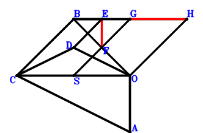
\(\because \) CA//DO and CA=2DO \(\therefore \small\overrightarrow{OD}=- \dfrac{\small\overrightarrow{OA}}{2} + \dfrac{\small\overrightarrow{OC}}{2}\).\(\because \) CB//DE and CB=2DE \(\therefore \small\overrightarrow{OE}=- \dfrac{\small\overrightarrow{OA}}{2} + \dfrac{\small\overrightarrow{OB}}{2}\).\(\because \) F is the midpoint of BO \(\therefore \small\overrightarrow{OF}=\dfrac{\small\overrightarrow{OB}}{2}\).\(\because \) BCSG is a parallelogram \(\therefore \small\overrightarrow{OG}=\small\overrightarrow{OB} - \small\overrightarrow{OC} + \small\overrightarrow{OS}\).\(\because \) BCOH is a parallelogram \(\therefore \small\overrightarrow{OH}=\small\overrightarrow{OB} - \small\overrightarrow{OC}\).\(\because \) SO=OA \( \therefore- \small\overrightarrow{OA}^{2} + \small\overrightarrow{OS}^{2}=0.\)In conclusion, \(\small\overrightarrow{EF}^{2} - \dfrac{\small\overrightarrow{GH}^{2}}{4}=\left(- \small\overrightarrow{OE} + \small\overrightarrow{OF}\right)^{2} - \dfrac{\left(- \small\overrightarrow{OG} + \small\overrightarrow{OH}\right)^{2}}{4}=\dfrac{\small\overrightarrow{OA}^{2}}{4} - \dfrac{\small\overrightarrow{OS}^{2}}{4}=0\), that is, GH=2EF.
Exercise 2706： Let GSOC be a parallelogram. CEDA is a trapezoid with CA//ED and CA=2ED. D, F are the midpoints of BO, BC, respectively. SO=AO. Prove that GC=2FE.
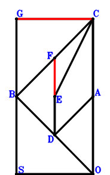
\(\because \) D is the midpoint of BO \(\therefore \small\overrightarrow{OD}=\dfrac{\small\overrightarrow{OB}}{2}\).\(\because \) CA//ED and CA=2ED \(\therefore \small\overrightarrow{OE}=- \dfrac{\small\overrightarrow{OA}}{2} + \dfrac{\small\overrightarrow{OB}}{2} + \dfrac{\small\overrightarrow{OC}}{2}\).\(\because \) F is the midpoint of BC \(\therefore \small\overrightarrow{OF}=\dfrac{\small\overrightarrow{OB}}{2} + \dfrac{\small\overrightarrow{OC}}{2}\).\(\because \) GSOC is a parallelogram \(\therefore \small\overrightarrow{OG}=\small\overrightarrow{OC} + \small\overrightarrow{OS}\).\(\because \) SO=AO \( \therefore- \small\overrightarrow{OA}^{2} + \small\overrightarrow{OS}^{2}=0.\)In conclusion, \(\small\overrightarrow{EF}^{2} - \dfrac{\small\overrightarrow{GC}^{2}}{4}=- \dfrac{\left(\small\overrightarrow{OC} - \small\overrightarrow{OG}\right)^{2}}{4} + \left(- \small\overrightarrow{OE} + \small\overrightarrow{OF}\right)^{2}=\dfrac{\small\overrightarrow{OA}^{2}}{4} - \dfrac{\small\overrightarrow{OS}^{2}}{4}=0\), that is, GC=2FE.
Exercise 2726： Let GBOF and FSBC be parallelograms. EOAD is a trapezoid with OA//ED and OA=2ED. D is the midpoint of BC. SO=OA. Prove that GC=2ED.
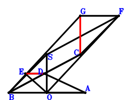
\(\because \) D is the midpoint of BC \(\therefore \small\overrightarrow{OD}=\dfrac{\small\overrightarrow{OB}}{2} + \dfrac{\small\overrightarrow{OC}}{2}\).\(\because \) OA//ED and OA=2ED \(\therefore \small\overrightarrow{OE}=- \dfrac{\small\overrightarrow{OA}}{2} + \dfrac{\small\overrightarrow{OB}}{2} + \dfrac{\small\overrightarrow{OC}}{2}\).\(\because \) FSBC is a parallelogram \(\therefore \small\overrightarrow{OF}=- \small\overrightarrow{OB} + \small\overrightarrow{OC} + \small\overrightarrow{OS}\).\(\because \) GBOF is a parallelogram \(\therefore \small\overrightarrow{OG}=\small\overrightarrow{OC} + \small\overrightarrow{OS}\).\(\because \) SO=OA \( \therefore- \small\overrightarrow{OA}^{2} + \small\overrightarrow{OS}^{2}=0.\)In conclusion, \(\small\overrightarrow{ED}^{2} - \dfrac{\small\overrightarrow{GC}^{2}}{4}=- \dfrac{\left(\small\overrightarrow{OC} - \small\overrightarrow{OG}\right)^{2}}{4} + \left(\small\overrightarrow{OD} - \small\overrightarrow{OE}\right)^{2}=\dfrac{\small\overrightarrow{OA}^{2}}{4} - \dfrac{\small\overrightarrow{OS}^{2}}{4}=0\), that is, GC=2ED.
Exercise 2733： Let ADEC be a trapezoid with AC//DE and AC=2DE. CGDH is a trapezoid with CH//GD and CH=2GD. D, F, G are the midpoints of BO, BC, SC, respectively. SO=AO. Prove that BH=2FE.
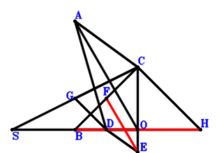
\(\because \) D is the midpoint of BO \(\therefore \small\overrightarrow{OD}=\dfrac{\small\overrightarrow{OB}}{2}\).\(\because \) AC//DE and AC=2DE \(\therefore \small\overrightarrow{OE}=- \dfrac{\small\overrightarrow{OA}}{2} + \dfrac{\small\overrightarrow{OB}}{2} + \dfrac{\small\overrightarrow{OC}}{2}\).\(\because \) F is the midpoint of BC \(\therefore \small\overrightarrow{OF}=\dfrac{\small\overrightarrow{OB}}{2} + \dfrac{\small\overrightarrow{OC}}{2}\).\(\because \) G is the midpoint of SC \(\therefore \small\overrightarrow{OG}=\dfrac{\small\overrightarrow{OC}}{2} + \dfrac{\small\overrightarrow{OS}}{2}\).\(\because \) D is the midpoint of BO \(\therefore \small\overrightarrow{OH}=2 \small\overrightarrow{OD} - \small\overrightarrow{OS}=\small\overrightarrow{OB} - \small\overrightarrow{OS}\).\(\because \) CH//GD and CH=2GD \( \therefore- \small\overrightarrow{OA}^{2} + \small\overrightarrow{OS}^{2}=0.\)In conclusion, \(- \dfrac{\small\overrightarrow{BH}^{2}}{4} + \small\overrightarrow{EF}^{2}=- \dfrac{\left(- \small\overrightarrow{OB} + \small\overrightarrow{OH}\right)^{2}}{4} + \left(- \small\overrightarrow{OE} + \small\overrightarrow{OF}\right)^{2}=\dfrac{\small\overrightarrow{OA}^{2}}{4} - \dfrac{\small\overrightarrow{OS}^{2}}{4}=0\), that is, BH=2FE.
Exercise 2838： Let FBOC be a parallelogram. D is the centroid of △CBO. E is the centroid of △CBA. G, H are the midpoints of FS, BC, respectively. OS=OA. Prove that 2HG=3DE.
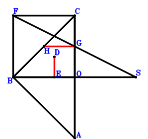
\(\because \) D is the centroid of △CBO \(\therefore \small\overrightarrow{OD}=\dfrac{\small\overrightarrow{OB}}{3} + \dfrac{\small\overrightarrow{OC}}{3}\).\(\because \) E is the centroid of △CBA \(\therefore \small\overrightarrow{OE}=\dfrac{\small\overrightarrow{OA}}{3} + \dfrac{\small\overrightarrow{OB}}{3} + \dfrac{\small\overrightarrow{OC}}{3}\).\(\because \) FBOC is a parallelogram \(\therefore \small\overrightarrow{OF}=\small\overrightarrow{OB} + \small\overrightarrow{OC}\).\(\because \) G is the midpoint of FS \(\therefore \small\overrightarrow{OG}=\dfrac{\small\overrightarrow{OF}}{2} + \dfrac{\small\overrightarrow{OS}}{2}=\dfrac{\small\overrightarrow{OB}}{2} + \dfrac{\small\overrightarrow{OC}}{2} + \dfrac{\small\overrightarrow{OS}}{2}\).\(\because \) H is the midpoint of BC \(\therefore \small\overrightarrow{OH}=\dfrac{\small\overrightarrow{OB}}{2} + \dfrac{\small\overrightarrow{OC}}{2}\).\(\because \) OS=OA \( \therefore- \small\overrightarrow{OA}^{2} + \small\overrightarrow{OS}^{2}=0.\)In conclusion, \(\dfrac{9 \small\overrightarrow{DE}^{2}}{4} - \small\overrightarrow{GH}^{2}=\dfrac{9 \left(- \small\overrightarrow{OD} + \small\overrightarrow{OE}\right)^{2}}{4} - \left(- \small\overrightarrow{OG} + \small\overrightarrow{OH}\right)^{2}=\dfrac{\small\overrightarrow{OA}^{2}}{4} - \dfrac{\small\overrightarrow{OS}^{2}}{4}=0\), that is, 2HG=3DE.
Exercise 2845： Let BGOC be a parallelogram. D is the centroid of △BOC. E is the centroid of △BAC. F, H are the midpoints of BS, GC, respectively. SO=OA. Prove that 2FH=3DE.
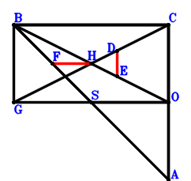
\(\because \) D is the centroid of △BOC \(\therefore \small\overrightarrow{OD}=\dfrac{\small\overrightarrow{OB}}{3} + \dfrac{\small\overrightarrow{OC}}{3}\).\(\because \) E is the centroid of △BAC \(\therefore \small\overrightarrow{OE}=\dfrac{\small\overrightarrow{OA}}{3} + \dfrac{\small\overrightarrow{OB}}{3} + \dfrac{\small\overrightarrow{OC}}{3}\).\(\because \) F is the midpoint of BS \(\therefore \small\overrightarrow{OF}=\dfrac{\small\overrightarrow{OB}}{2} + \dfrac{\small\overrightarrow{OS}}{2}\).\(\because \) BGOC is a parallelogram \(\therefore \small\overrightarrow{OG}=\small\overrightarrow{OB} - \small\overrightarrow{OC}\).\(\because \) H is the midpoint of GC \(\therefore \small\overrightarrow{OH}=\dfrac{\small\overrightarrow{OC}}{2} + \dfrac{\small\overrightarrow{OG}}{2}=\dfrac{\small\overrightarrow{OB}}{2}\).\(\because \) SO=OA \( \therefore- \small\overrightarrow{OA}^{2} + \small\overrightarrow{OS}^{2}=0.\)In conclusion, \(\dfrac{9 \small\overrightarrow{DE}^{2}}{4} - \small\overrightarrow{FH}^{2}=\dfrac{9 \left(- \small\overrightarrow{OD} + \small\overrightarrow{OE}\right)^{2}}{4} - \left(- \small\overrightarrow{OF} + \small\overrightarrow{OH}\right)^{2}=\dfrac{\small\overrightarrow{OA}^{2}}{4} - \dfrac{\small\overrightarrow{OS}^{2}}{4}=0\), that is, 2FH=3DE.
Exercise 2867： Let DCOB, FGCB and FSOB be parallelograms. O, E are the orthocenter and circumcenter of △BCA. SO=OA. Prove that DE=GC.
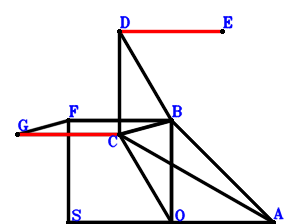
\(\because \) DCOB is a parallelogram \(\therefore \small\overrightarrow{OD}=\small\overrightarrow{OB} + \small\overrightarrow{OC}\).\(\because \) O, E are the orthocenter and circumcenter of △BCA \(\therefore \small\overrightarrow{OE}=\small\overrightarrow{OA} + \small\overrightarrow{OB} + \small\overrightarrow{OC}\).\(\because \) FSOB is a parallelogram \(\therefore \small\overrightarrow{OF}=\small\overrightarrow{OB} + \small\overrightarrow{OS}\).\(\because \) FGCB is a parallelogram \(\therefore \small\overrightarrow{OG}=\small\overrightarrow{OC} + \small\overrightarrow{OS}\).\(\because \) SO=OA \( \therefore- \small\overrightarrow{OA}^{2} + \small\overrightarrow{OS}^{2}=0.\)In conclusion, \(\small\overrightarrow{ED}^{2} - \small\overrightarrow{GC}^{2}=- \left(\small\overrightarrow{OC} - \small\overrightarrow{OG}\right)^{2} + \left(\small\overrightarrow{OD} - \small\overrightarrow{OE}\right)^{2}=\small\overrightarrow{OA}^{2} - \small\overrightarrow{OS}^{2}=0\), that is, DE=GC.
Exercise 2885： Let DBOC be a parallelogram. O, E are the orthocenter and circumcenter of △CBA. F, G are the midpoints of SB, BO, respectively. SO=AO. Prove that ED=2FG.
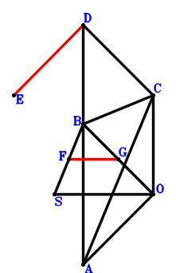
\(\because \) DBOC is a parallelogram \(\therefore \small\overrightarrow{OD}=\small\overrightarrow{OB} + \small\overrightarrow{OC}\).\(\because \) O, E are the orthocenter and circumcenter of △CBA \(\therefore \small\overrightarrow{OE}=\small\overrightarrow{OA} + \small\overrightarrow{OB} + \small\overrightarrow{OC}\).\(\because \) F is the midpoint of SB \(\therefore \small\overrightarrow{OF}=\dfrac{\small\overrightarrow{OB}}{2} + \dfrac{\small\overrightarrow{OS}}{2}\).\(\because \) G is the midpoint of BO \(\therefore \small\overrightarrow{OG}=\dfrac{\small\overrightarrow{OB}}{2}\).\(\because \) SO=AO \( \therefore- \small\overrightarrow{OA}^{2} + \small\overrightarrow{OS}^{2}=0.\)In conclusion, \(\dfrac{\small\overrightarrow{DE}^{2}}{4} - \small\overrightarrow{FG}^{2}=\dfrac{\left(- \small\overrightarrow{OD} + \small\overrightarrow{OE}\right)^{2}}{4} - \left(- \small\overrightarrow{OF} + \small\overrightarrow{OG}\right)^{2}=\dfrac{\small\overrightarrow{OA}^{2}}{4} - \dfrac{\small\overrightarrow{OS}^{2}}{4}=0\), that is, ED=2FG.
Exercise 2892： Let BDCO and FSOB be parallelograms. O, E are the orthocenter and circumcenter of △ABC. G, H are the midpoints of FC, BC, respectively. SO=AO. Prove that ED=2GH.
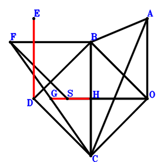
\(\because \) BDCO is a parallelogram \(\therefore \small\overrightarrow{OD}=\small\overrightarrow{OB} + \small\overrightarrow{OC}\).\(\because \) O, E are the orthocenter and circumcenter of △ABC \(\therefore \small\overrightarrow{OE}=\small\overrightarrow{OA} + \small\overrightarrow{OB} + \small\overrightarrow{OC}\).\(\because \) FSOB is a parallelogram \(\therefore \small\overrightarrow{OF}=\small\overrightarrow{OB} + \small\overrightarrow{OS}\).\(\because \) G is the midpoint of FC \(\therefore \small\overrightarrow{OG}=\dfrac{\small\overrightarrow{OC}}{2} + \dfrac{\small\overrightarrow{OF}}{2}=\dfrac{\small\overrightarrow{OB}}{2} + \dfrac{\small\overrightarrow{OC}}{2} + \dfrac{\small\overrightarrow{OS}}{2}\).\(\because \) H is the midpoint of BC \(\therefore \small\overrightarrow{OH}=\dfrac{\small\overrightarrow{OB}}{2} + \dfrac{\small\overrightarrow{OC}}{2}\).\(\because \) SO=AO \( \therefore- \small\overrightarrow{OA}^{2} + \small\overrightarrow{OS}^{2}=0.\)In conclusion, \(\dfrac{\small\overrightarrow{DE}^{2}}{4} - \small\overrightarrow{GH}^{2}=\dfrac{\left(- \small\overrightarrow{OD} + \small\overrightarrow{OE}\right)^{2}}{4} - \left(- \small\overrightarrow{OG} + \small\overrightarrow{OH}\right)^{2}=\dfrac{\small\overrightarrow{OA}^{2}}{4} - \dfrac{\small\overrightarrow{OS}^{2}}{4}=0\), that is, ED=2GH.
Exercise 2906： Let DBOC be a parallelogram. F is the centroid of △CBS. G is the centroid of △CBO. O, E are the orthocenter and circumcenter of △CBA. OS=OA. Prove that DE=3GF.
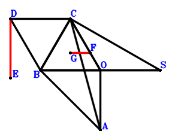
\(\because \) DBOC is a parallelogram \(\therefore \small\overrightarrow{OD}=\small\overrightarrow{OB} + \small\overrightarrow{OC}\).\(\because \) O, E are the orthocenter and circumcenter of △CBA \(\therefore \small\overrightarrow{OE}=\small\overrightarrow{OA} + \small\overrightarrow{OB} + \small\overrightarrow{OC}\).\(\because \) F is the centroid of △CBS \(\therefore \small\overrightarrow{OF}=\dfrac{\small\overrightarrow{OB}}{3} + \dfrac{\small\overrightarrow{OC}}{3} + \dfrac{\small\overrightarrow{OS}}{3}\).\(\because \) G is the centroid of △CBO \(\therefore \small\overrightarrow{OG}=\dfrac{\small\overrightarrow{OB}}{3} + \dfrac{\small\overrightarrow{OC}}{3}\).\(\because \) OS=OA \( \therefore- \small\overrightarrow{OA}^{2} + \small\overrightarrow{OS}^{2}=0.\)In conclusion, \(\small\overrightarrow{ED}^{2} - 9 \small\overrightarrow{GF}^{2}=\left(\small\overrightarrow{OD} - \small\overrightarrow{OE}\right)^{2} - 9 \left(\small\overrightarrow{OF} - \small\overrightarrow{OG}\right)^{2}=\small\overrightarrow{OA}^{2} - \small\overrightarrow{OS}^{2}=0\), that is, DE=3GF.
Exercise 2919： Let EABC, GBOC and CSBH be parallelograms. F, D are the midpoints of BE, CO, respectively. SO=AO. Prove that GH=2FD.
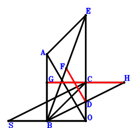
\(\because \) D is the midpoint of CO \(\therefore \small\overrightarrow{OD}=\dfrac{\small\overrightarrow{OC}}{2}\).\(\because \) EABC is a parallelogram \(\therefore \small\overrightarrow{OE}=\small\overrightarrow{OA} - \small\overrightarrow{OB} + \small\overrightarrow{OC}\).\(\because \) F is the midpoint of BE \(\therefore \small\overrightarrow{OF}=\dfrac{\small\overrightarrow{OB}}{2} + \dfrac{\small\overrightarrow{OE}}{2}=\dfrac{\small\overrightarrow{OA}}{2} + \dfrac{\small\overrightarrow{OC}}{2}\).\(\because \) GBOC is a parallelogram \(\therefore \small\overrightarrow{OG}=\small\overrightarrow{OB} + \small\overrightarrow{OC}\).\(\because \) CSBH is a parallelogram \(\therefore \small\overrightarrow{OH}=\small\overrightarrow{OB} + \small\overrightarrow{OC} - \small\overrightarrow{OS}\).\(\because \) SO=AO \( \therefore- \small\overrightarrow{OA}^{2} + \small\overrightarrow{OS}^{2}=0.\)In conclusion, \(\small\overrightarrow{DF}^{2} - \dfrac{\small\overrightarrow{GH}^{2}}{4}=\left(- \small\overrightarrow{OD} + \small\overrightarrow{OF}\right)^{2} - \dfrac{\left(- \small\overrightarrow{OG} + \small\overrightarrow{OH}\right)^{2}}{4}=\dfrac{\small\overrightarrow{OA}^{2}}{4} - \dfrac{\small\overrightarrow{OS}^{2}}{4}=0\), that is, GH=2FD.
Exercise 2944： Let ECBA be a parallelogram. G, F, D are the midpoints of CS, EB, CO, respectively. OS=OA. Prove that DF=DG.
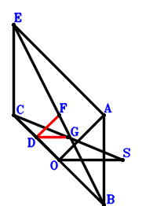
\(\because \) D is the midpoint of CO \(\therefore \small\overrightarrow{OD}=\dfrac{\small\overrightarrow{OC}}{2}\).\(\because \) ECBA is a parallelogram \(\therefore \small\overrightarrow{OE}=\small\overrightarrow{OA} - \small\overrightarrow{OB} + \small\overrightarrow{OC}\).\(\because \) F is the midpoint of EB \(\therefore \small\overrightarrow{OF}=\dfrac{\small\overrightarrow{OB}}{2} + \dfrac{\small\overrightarrow{OE}}{2}=\dfrac{\small\overrightarrow{OA}}{2} + \dfrac{\small\overrightarrow{OC}}{2}\).\(\because \) G is the midpoint of CS \(\therefore \small\overrightarrow{OG}=\dfrac{\small\overrightarrow{OC}}{2} + \dfrac{\small\overrightarrow{OS}}{2}\).\(\because \) D is the midpoint of CO \( \therefore- \small\overrightarrow{OA}^{2} + \small\overrightarrow{OS}^{2}=0.\)In conclusion, \(\small\overrightarrow{DF}^{2} - \small\overrightarrow{GD}^{2}=\left(- \small\overrightarrow{OD} + \small\overrightarrow{OF}\right)^{2} - \left(\small\overrightarrow{OD} - \small\overrightarrow{OG}\right)^{2}=\dfrac{\small\overrightarrow{OA}^{2}}{4} - \dfrac{\small\overrightarrow{OS}^{2}}{4}=0\), that is, DF=DG.
Exercise 2964： Let CBEA be a parallelogram. G is the centroid of △CBS. H, G, C are collinear and HC=3HG. D, F are the midpoints of BO, EC, respectively. OS=OA. Prove that DF=DH.
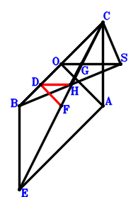
\(\because \) D is the midpoint of BO \(\therefore \small\overrightarrow{OD}=\dfrac{\small\overrightarrow{OB}}{2}\).\(\because \) CBEA is a parallelogram \(\therefore \small\overrightarrow{OE}=\small\overrightarrow{OA} + \small\overrightarrow{OB} - \small\overrightarrow{OC}\).\(\because \) F is the midpoint of EC \(\therefore \small\overrightarrow{OF}=\dfrac{\small\overrightarrow{OC}}{2} + \dfrac{\small\overrightarrow{OE}}{2}=\dfrac{\small\overrightarrow{OA}}{2} + \dfrac{\small\overrightarrow{OB}}{2}\).\(\because \) G is the centroid of △CBS \(\therefore \small\overrightarrow{OG}=\dfrac{\small\overrightarrow{OB}}{3} + \dfrac{\small\overrightarrow{OC}}{3} + \dfrac{\small\overrightarrow{OS}}{3}\).\(\because \) H, G, C are collinear and HC=3HG \(\therefore \small\overrightarrow{OH}=- \dfrac{\small\overrightarrow{OC}}{2} + \dfrac{3 \small\overrightarrow{OG}}{2}=\dfrac{\small\overrightarrow{OB}}{2} + \dfrac{\small\overrightarrow{OS}}{2}\).\(\because \) D is the midpoint of BO \( \therefore- \small\overrightarrow{OA}^{2} + \small\overrightarrow{OS}^{2}=0.\)In conclusion, \(\small\overrightarrow{DF}^{2} - \small\overrightarrow{HD}^{2}=\left(- \small\overrightarrow{OD} + \small\overrightarrow{OF}\right)^{2} - \left(\small\overrightarrow{OD} - \small\overrightarrow{OH}\right)^{2}=\dfrac{\small\overrightarrow{OA}^{2}}{4} - \dfrac{\small\overrightarrow{OS}^{2}}{4}=0\), that is, DF=DH.
Exercise 2973： Let BCSG and CEAO be parallelograms. I, F, H, D are the midpoints of BO, EB, CG, CB, respectively. SO=OA. Prove that DF=HI.
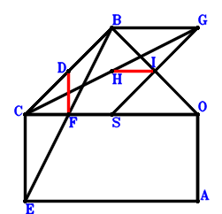
\(\because \) D is the midpoint of CB \(\therefore \small\overrightarrow{OD}=\dfrac{\small\overrightarrow{OB}}{2} + \dfrac{\small\overrightarrow{OC}}{2}\).\(\because \) CEAO is a parallelogram \(\therefore \small\overrightarrow{OE}=\small\overrightarrow{OA} + \small\overrightarrow{OC}\).\(\because \) F is the midpoint of EB \(\therefore \small\overrightarrow{OF}=\dfrac{\small\overrightarrow{OB}}{2} + \dfrac{\small\overrightarrow{OE}}{2}=\dfrac{\small\overrightarrow{OA}}{2} + \dfrac{\small\overrightarrow{OB}}{2} + \dfrac{\small\overrightarrow{OC}}{2}\).\(\because \) BCSG is a parallelogram \(\therefore \small\overrightarrow{OG}=\small\overrightarrow{OB} - \small\overrightarrow{OC} + \small\overrightarrow{OS}\).\(\because \) H is the midpoint of CG \(\therefore \small\overrightarrow{OH}=\dfrac{\small\overrightarrow{OC}}{2} + \dfrac{\small\overrightarrow{OG}}{2}=\dfrac{\small\overrightarrow{OB}}{2} + \dfrac{\small\overrightarrow{OS}}{2}\).\(\because \) I is the midpoint of BO \(\therefore \small\overrightarrow{OI}=\dfrac{\small\overrightarrow{OB}}{2}\).\(\because \) SO=OA \( \therefore- \small\overrightarrow{OA}^{2} + \small\overrightarrow{OS}^{2}=0.\)In conclusion, \(\small\overrightarrow{DF}^{2} - \small\overrightarrow{HI}^{2}=\left(- \small\overrightarrow{OD} + \small\overrightarrow{OF}\right)^{2} - \left(- \small\overrightarrow{OH} + \small\overrightarrow{OI}\right)^{2}=\dfrac{\small\overrightarrow{OA}^{2}}{4} - \dfrac{\small\overrightarrow{OS}^{2}}{4}=0\), that is, DF=HI.
Exercise 2977： Let ECOB be a parallelogram. GSOD is a trapezoid with SO//GD and SO=2GD. F, D are the midpoints of EA, CB, respectively. SO=AO. Prove that FD=GD.
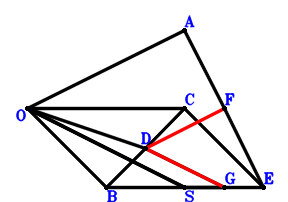
\(\because \) D is the midpoint of CB \(\therefore \small\overrightarrow{OD}=\dfrac{\small\overrightarrow{OB}}{2} + \dfrac{\small\overrightarrow{OC}}{2}\).\(\because \) ECOB is a parallelogram \(\therefore \small\overrightarrow{OE}=\small\overrightarrow{OB} + \small\overrightarrow{OC}\).\(\because \) F is the midpoint of EA \(\therefore \small\overrightarrow{OF}=\dfrac{\small\overrightarrow{OA}}{2} + \dfrac{\small\overrightarrow{OE}}{2}=\dfrac{\small\overrightarrow{OA}}{2} + \dfrac{\small\overrightarrow{OB}}{2} + \dfrac{\small\overrightarrow{OC}}{2}\).\(\because \) SO//GD and SO=2GD \(\therefore \small\overrightarrow{OG}=\dfrac{\small\overrightarrow{OB}}{2} + \dfrac{\small\overrightarrow{OC}}{2} + \dfrac{\small\overrightarrow{OS}}{2}\).\(\because \) SO=AO \( \therefore- \small\overrightarrow{OA}^{2} + \small\overrightarrow{OS}^{2}=0.\)In conclusion, \(\small\overrightarrow{DF}^{2} - \small\overrightarrow{GD}^{2}=\left(- \small\overrightarrow{OD} + \small\overrightarrow{OF}\right)^{2} - \left(\small\overrightarrow{OD} - \small\overrightarrow{OG}\right)^{2}=\dfrac{\small\overrightarrow{OA}^{2}}{4} - \dfrac{\small\overrightarrow{OS}^{2}}{4}=0\), that is, FD=GD.
Exercise 3194： Let OEDB be a parallelogram. F is the centroid of △CSB. G is the centroid of △CBO. O, D are the orthocenter and circumcenter of △CBA. SO=OA. Prove that CE=3FG.
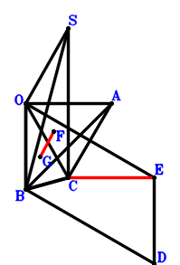
\(\because \) O, D are the orthocenter and circumcenter of △CBA \(\therefore \small\overrightarrow{OD}=\small\overrightarrow{OA} + \small\overrightarrow{OB} + \small\overrightarrow{OC}\).\(\because \) OEDB is a parallelogram \(\therefore \small\overrightarrow{OE}=\small\overrightarrow{OA} + \small\overrightarrow{OC}\).\(\because \) F is the centroid of △CSB \(\therefore \small\overrightarrow{OF}=\dfrac{\small\overrightarrow{OB}}{3} + \dfrac{\small\overrightarrow{OC}}{3} + \dfrac{\small\overrightarrow{OS}}{3}\).\(\because \) G is the centroid of △CBO \(\therefore \small\overrightarrow{OG}=\dfrac{\small\overrightarrow{OB}}{3} + \dfrac{\small\overrightarrow{OC}}{3}\).\(\because \) SO=OA \( \therefore- \small\overrightarrow{OA}^{2} + \small\overrightarrow{OS}^{2}=0.\)In conclusion, \(\small\overrightarrow{EC}^{2} - 9 \small\overrightarrow{GF}^{2}=\left(\small\overrightarrow{OC} - \small\overrightarrow{OE}\right)^{2} - 9 \left(\small\overrightarrow{OF} - \small\overrightarrow{OG}\right)^{2}=\small\overrightarrow{OA}^{2} - \small\overrightarrow{OS}^{2}=0\), that is, CE=3FG.
Exercise 3219： Let ISCH and HCOB be parallelograms. AFED is a trapezoid with AF//DE and AF=2DE. G, D, E are the midpoints of FB, CB, CO, respectively. SO=AO. Prove that IB=2GO.
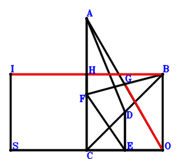
\(\because \) D is the midpoint of CB \(\therefore \small\overrightarrow{OD}=\dfrac{\small\overrightarrow{OB}}{2} + \dfrac{\small\overrightarrow{OC}}{2}\).\(\because \) E is the midpoint of CO \(\therefore \small\overrightarrow{OE}=\dfrac{\small\overrightarrow{OC}}{2}\).\(\because \) AF//DE and AF=2DE \(\therefore \small\overrightarrow{OF}=\small\overrightarrow{OA} - \small\overrightarrow{OB} - \small\overrightarrow{OC} + 2 \small\overrightarrow{OE}=\small\overrightarrow{OA} - \small\overrightarrow{OB}\).\(\because \) G is the midpoint of FB \(\therefore \small\overrightarrow{OG}=\dfrac{\small\overrightarrow{OB}}{2} + \dfrac{\small\overrightarrow{OF}}{2}=\dfrac{\small\overrightarrow{OA}}{2}\).\(\because \) HCOB is a parallelogram \(\therefore \small\overrightarrow{OH}=\small\overrightarrow{OB} + \small\overrightarrow{OC}\).\(\because \) ISCH is a parallelogram \(\therefore \small\overrightarrow{OI}=\small\overrightarrow{OB} + \small\overrightarrow{OS}\).\(\because \) SO=AO \( \therefore- \small\overrightarrow{OA}^{2} + \small\overrightarrow{OS}^{2}=0.\)In conclusion, \(- \dfrac{\small\overrightarrow{IB}^{2}}{4} + \small\overrightarrow{OG}^{2}=\small\overrightarrow{OG}^{2} - \dfrac{\left(\small\overrightarrow{OB} - \small\overrightarrow{OI}\right)^{2}}{4}=\dfrac{\small\overrightarrow{OA}^{2}}{4} - \dfrac{\small\overrightarrow{OS}^{2}}{4}=0\), that is, IB=2GO.
Exercise 3433： Let BSHC be a parallelogram. E is the centroid of △BAO. E, F, C are collinear and FC=3EF. F, D, J, I are the midpoints of DG, BC, CO, BH, respectively. SO=AO. Prove that GO=IJ.
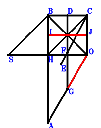
\(\because \) D is the midpoint of BC \(\therefore \small\overrightarrow{OD}=\dfrac{\small\overrightarrow{OB}}{2} + \dfrac{\small\overrightarrow{OC}}{2}\).\(\because \) E is the centroid of △BAO \(\therefore \small\overrightarrow{OE}=\dfrac{\small\overrightarrow{OA}}{3} + \dfrac{\small\overrightarrow{OB}}{3}\).\(\because \) E, F, C are collinear and FC=3EF \(\therefore \small\overrightarrow{OF}=\dfrac{\small\overrightarrow{OC}}{4} + \dfrac{3 \small\overrightarrow{OE}}{4}=\dfrac{\small\overrightarrow{OA}}{4} + \dfrac{\small\overrightarrow{OB}}{4} + \dfrac{\small\overrightarrow{OC}}{4}\).\(\because \) F is the midpoint of DG \(\therefore \small\overrightarrow{OG}=- \dfrac{\small\overrightarrow{OB}}{2} - \dfrac{\small\overrightarrow{OC}}{2} + 2 \small\overrightarrow{OF}=\dfrac{\small\overrightarrow{OA}}{2}\).\(\because \) BSHC is a parallelogram \(\therefore \small\overrightarrow{OH}=- \small\overrightarrow{OB} + \small\overrightarrow{OC} + \small\overrightarrow{OS}\).\(\because \) I is the midpoint of BH \(\therefore \small\overrightarrow{OI}=\dfrac{\small\overrightarrow{OB}}{2} + \dfrac{\small\overrightarrow{OH}}{2}=\dfrac{\small\overrightarrow{OC}}{2} + \dfrac{\small\overrightarrow{OS}}{2}\).\(\because \) J is the midpoint of CO \(\therefore \small\overrightarrow{OJ}=\dfrac{\small\overrightarrow{OC}}{2}\).\(\because \) SO=AO \( \therefore- \small\overrightarrow{OA}^{2} + \small\overrightarrow{OS}^{2}=0.\)In conclusion, \(- \small\overrightarrow{IJ}^{2} + \small\overrightarrow{OG}^{2}=\small\overrightarrow{OG}^{2} - \left(- \small\overrightarrow{OI} + \small\overrightarrow{OJ}\right)^{2}=\dfrac{\small\overrightarrow{OA}^{2}}{4} - \dfrac{\small\overrightarrow{OS}^{2}}{4}=0\), that is, GO=IJ.
Exercise 3488： Let GEOF and CSOH be parallelograms. D, E, F are the midpoints of BC, BA, CO, respectively. SO=AO. Prove that CH=2GD.
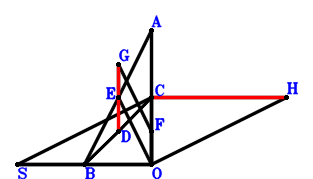
\(\because \) D is the midpoint of BC \(\therefore \small\overrightarrow{OD}=\dfrac{\small\overrightarrow{OB}}{2} + \dfrac{\small\overrightarrow{OC}}{2}\).\(\because \) E is the midpoint of BA \(\therefore \small\overrightarrow{OE}=\dfrac{\small\overrightarrow{OA}}{2} + \dfrac{\small\overrightarrow{OB}}{2}\).\(\because \) F is the midpoint of CO \(\therefore \small\overrightarrow{OF}=\dfrac{\small\overrightarrow{OC}}{2}\).\(\because \) GEOF is a parallelogram \(\therefore \small\overrightarrow{OG}=\dfrac{\small\overrightarrow{OA}}{2} + \dfrac{\small\overrightarrow{OB}}{2} + \dfrac{\small\overrightarrow{OC}}{2}\).\(\because \) CSOH is a parallelogram \(\therefore \small\overrightarrow{OH}=\small\overrightarrow{OC} - \small\overrightarrow{OS}\).\(\because \) SO=AO \( \therefore- \small\overrightarrow{OA}^{2} + \small\overrightarrow{OS}^{2}=0.\)In conclusion, \(- \dfrac{\small\overrightarrow{CH}^{2}}{4} + \small\overrightarrow{DG}^{2}=- \dfrac{\left(- \small\overrightarrow{OC} + \small\overrightarrow{OH}\right)^{2}}{4} + \left(- \small\overrightarrow{OD} + \small\overrightarrow{OG}\right)^{2}=\dfrac{\small\overrightarrow{OA}^{2}}{4} - \dfrac{\small\overrightarrow{OS}^{2}}{4}=0\), that is, CH=2GD.
Exercise 3640： Let HSCB be a parallelogram. F is the centroid of △CAO. F, G, B are collinear and GB=3FG. J, E, I, D are the midpoints of BO, DO, HC, CB, respectively. SO=AO. Prove that IJ=2GE.
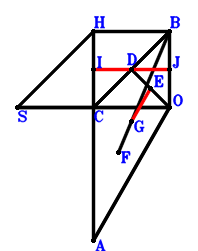
\(\because \) D is the midpoint of CB \(\therefore \small\overrightarrow{OD}=\dfrac{\small\overrightarrow{OB}}{2} + \dfrac{\small\overrightarrow{OC}}{2}\).\(\because \) E is the midpoint of DO \(\therefore \small\overrightarrow{OE}=\dfrac{\small\overrightarrow{OD}}{2}=\dfrac{\small\overrightarrow{OB}}{4} + \dfrac{\small\overrightarrow{OC}}{4}\).\(\because \) F is the centroid of △CAO \(\therefore \small\overrightarrow{OF}=\dfrac{\small\overrightarrow{OA}}{3} + \dfrac{\small\overrightarrow{OC}}{3}\).\(\because \) F, G, B are collinear and GB=3FG \(\therefore \small\overrightarrow{OG}=\dfrac{\small\overrightarrow{OB}}{4} + \dfrac{3 \small\overrightarrow{OF}}{4}=\dfrac{\small\overrightarrow{OA}}{4} + \dfrac{\small\overrightarrow{OB}}{4} + \dfrac{\small\overrightarrow{OC}}{4}\).\(\because \) HSCB is a parallelogram \(\therefore \small\overrightarrow{OH}=\small\overrightarrow{OB} - \small\overrightarrow{OC} + \small\overrightarrow{OS}\).\(\because \) I is the midpoint of HC \(\therefore \small\overrightarrow{OI}=\dfrac{\small\overrightarrow{OC}}{2} + \dfrac{\small\overrightarrow{OH}}{2}=\dfrac{\small\overrightarrow{OB}}{2} + \dfrac{\small\overrightarrow{OS}}{2}\).\(\because \) J is the midpoint of BO \(\therefore \small\overrightarrow{OJ}=\dfrac{\small\overrightarrow{OB}}{2}\).\(\because \) SO=AO \( \therefore- \small\overrightarrow{OA}^{2} + \small\overrightarrow{OS}^{2}=0.\)In conclusion, \(4 \small\overrightarrow{EG}^{2} - \small\overrightarrow{IJ}^{2}=4 \left(- \small\overrightarrow{OE} + \small\overrightarrow{OG}\right)^{2} - \left(- \small\overrightarrow{OI} + \small\overrightarrow{OJ}\right)^{2}=\dfrac{\small\overrightarrow{OA}^{2}}{4} - \dfrac{\small\overrightarrow{OS}^{2}}{4}=0\), that is, IJ=2GE.
Exercise 3703： Let CDEA, CSOG and CDOB be parallelograms. F is the midpoint of EB. SO=AO. Prove that CG=2FO.
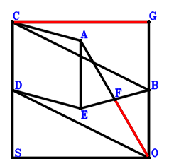
\(\because \) CDOB is a parallelogram \(\therefore \small\overrightarrow{OD}=- \small\overrightarrow{OB} + \small\overrightarrow{OC}\).\(\because \) CDEA is a parallelogram \(\therefore \small\overrightarrow{OE}=\small\overrightarrow{OA} - \small\overrightarrow{OB}\).\(\because \) F is the midpoint of EB \(\therefore \small\overrightarrow{OF}=\dfrac{\small\overrightarrow{OB}}{2} + \dfrac{\small\overrightarrow{OE}}{2}=\dfrac{\small\overrightarrow{OA}}{2}\).\(\because \) CSOG is a parallelogram \(\therefore \small\overrightarrow{OG}=\small\overrightarrow{OC} - \small\overrightarrow{OS}\).\(\because \) SO=AO \( \therefore- \small\overrightarrow{OA}^{2} + \small\overrightarrow{OS}^{2}=0.\)In conclusion, \(- \dfrac{\small\overrightarrow{CG}^{2}}{4} + \small\overrightarrow{OF}^{2}=\small\overrightarrow{OF}^{2} - \dfrac{\left(- \small\overrightarrow{OC} + \small\overrightarrow{OG}\right)^{2}}{4}=\dfrac{\small\overrightarrow{OA}^{2}}{4} - \dfrac{\small\overrightarrow{OS}^{2}}{4}=0\), that is, CG=2FO.
Exercise 3744： Let EDBO and DBCA be parallelograms. H, F, G are the midpoints of BO, EC, BS, respectively. OS=OA. Prove that OF=HG.
\(\because \) DBCA is a parallelogram \(\therefore \small\overrightarrow{OD}=\small\overrightarrow{OA} + \small\overrightarrow{OB} - \small\overrightarrow{OC}\).\(\because \) EDBO is a parallelogram \(\therefore \small\overrightarrow{OE}=\small\overrightarrow{OA} - \small\overrightarrow{OC}\).\(\because \) F is the midpoint of EC \(\therefore \small\overrightarrow{OF}=\dfrac{\small\overrightarrow{OC}}{2} + \dfrac{\small\overrightarrow{OE}}{2}=\dfrac{\small\overrightarrow{OA}}{2}\).\(\because \) G is the midpoint of BS \(\therefore \small\overrightarrow{OG}=\dfrac{\small\overrightarrow{OB}}{2} + \dfrac{\small\overrightarrow{OS}}{2}\).\(\because \) H is the midpoint of BO \(\therefore \small\overrightarrow{OH}=\dfrac{\small\overrightarrow{OB}}{2}\).\(\because \) OS=OA \( \therefore- \small\overrightarrow{OA}^{2} + \small\overrightarrow{OS}^{2}=0.\)In conclusion, \(- \small\overrightarrow{GH}^{2} + \small\overrightarrow{OF}^{2}=\small\overrightarrow{OF}^{2} - \left(- \small\overrightarrow{OG} + \small\overrightarrow{OH}\right)^{2}=\dfrac{\small\overrightarrow{OA}^{2}}{4} - \dfrac{\small\overrightarrow{OS}^{2}}{4}=0\), that is, OF=HG.
Exercise 3828： Let ABCD and GSOB be parallelograms. E is the centroid of △BOD. C, E, F are collinear and CF=3EF. SO=AO. Prove that GB=2FO.
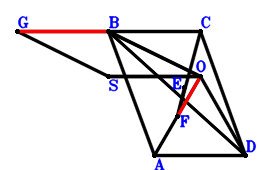
\(\because \) ABCD is a parallelogram \(\therefore \small\overrightarrow{OD}=\small\overrightarrow{OA} - \small\overrightarrow{OB} + \small\overrightarrow{OC}\).\(\because \) E is the centroid of △BOD \(\therefore \small\overrightarrow{OE}=\dfrac{\small\overrightarrow{OB}}{3} + \dfrac{\small\overrightarrow{OD}}{3}=\dfrac{\small\overrightarrow{OA}}{3} + \dfrac{\small\overrightarrow{OC}}{3}\).\(\because \) C, E, F are collinear and CF=3EF \(\therefore \small\overrightarrow{OF}=- \dfrac{\small\overrightarrow{OC}}{2} + \dfrac{3 \small\overrightarrow{OE}}{2}=\dfrac{\small\overrightarrow{OA}}{2}\).\(\because \) GSOB is a parallelogram \(\therefore \small\overrightarrow{OG}=\small\overrightarrow{OB} + \small\overrightarrow{OS}\).\(\because \) SO=AO \( \therefore- \small\overrightarrow{OA}^{2} + \small\overrightarrow{OS}^{2}=0.\)In conclusion, \(- \dfrac{\small\overrightarrow{GB}^{2}}{4} + \small\overrightarrow{OF}^{2}=\small\overrightarrow{OF}^{2} - \dfrac{\left(\small\overrightarrow{OB} - \small\overrightarrow{OG}\right)^{2}}{4}=\dfrac{\small\overrightarrow{OA}^{2}}{4} - \dfrac{\small\overrightarrow{OS}^{2}}{4}=0\), that is, GB=2FO.
Exercise 3894： Let DBAC and GSOC be parallelograms. E is the centroid of △CBO. D, E, F are collinear and DF=3EF. I, H are the midpoints of BC, BG, respectively. SO=OA. Prove that OF=HI.
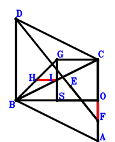
\(\because \) DBAC is a parallelogram \(\therefore \small\overrightarrow{OD}=- \small\overrightarrow{OA} + \small\overrightarrow{OB} + \small\overrightarrow{OC}\).\(\because \) E is the centroid of △CBO \(\therefore \small\overrightarrow{OE}=\dfrac{\small\overrightarrow{OB}}{3} + \dfrac{\small\overrightarrow{OC}}{3}\).\(\because \) D, E, F are collinear and DF=3EF \(\therefore \small\overrightarrow{OF}=\dfrac{\small\overrightarrow{OA}}{2} - \dfrac{\small\overrightarrow{OB}}{2} - \dfrac{\small\overrightarrow{OC}}{2} + \dfrac{3 \small\overrightarrow{OE}}{2}=\dfrac{\small\overrightarrow{OA}}{2}\).\(\because \) GSOC is a parallelogram \(\therefore \small\overrightarrow{OG}=\small\overrightarrow{OC} + \small\overrightarrow{OS}\).\(\because \) H is the midpoint of BG \(\therefore \small\overrightarrow{OH}=\dfrac{\small\overrightarrow{OB}}{2} + \dfrac{\small\overrightarrow{OG}}{2}=\dfrac{\small\overrightarrow{OB}}{2} + \dfrac{\small\overrightarrow{OC}}{2} + \dfrac{\small\overrightarrow{OS}}{2}\).\(\because \) I is the midpoint of BC \(\therefore \small\overrightarrow{OI}=\dfrac{\small\overrightarrow{OB}}{2} + \dfrac{\small\overrightarrow{OC}}{2}\).\(\because \) SO=OA \( \therefore- \small\overrightarrow{OA}^{2} + \small\overrightarrow{OS}^{2}=0.\)In conclusion, \(- \small\overrightarrow{HI}^{2} + \small\overrightarrow{OF}^{2}=\small\overrightarrow{OF}^{2} - \left(- \small\overrightarrow{OH} + \small\overrightarrow{OI}\right)^{2}=\dfrac{\small\overrightarrow{OA}^{2}}{4} - \dfrac{\small\overrightarrow{OS}^{2}}{4}=0\), that is, OF=HI.
Exercise 3913： Let BADC be a parallelogram. HSOG is a trapezoid with SO//HG and SO=2HG. E is the centroid of △BOD. F, E, C are collinear and FC=3FE. G is the midpoint of BC. SO=OA. Prove that OF=HG.
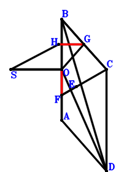
\(\because \) BADC is a parallelogram \(\therefore \small\overrightarrow{OD}=\small\overrightarrow{OA} - \small\overrightarrow{OB} + \small\overrightarrow{OC}\).\(\because \) E is the centroid of △BOD \(\therefore \small\overrightarrow{OE}=\dfrac{\small\overrightarrow{OB}}{3} + \dfrac{\small\overrightarrow{OD}}{3}=\dfrac{\small\overrightarrow{OA}}{3} + \dfrac{\small\overrightarrow{OC}}{3}\).\(\because \) F, E, C are collinear and FC=3FE \(\therefore \small\overrightarrow{OF}=- \dfrac{\small\overrightarrow{OC}}{2} + \dfrac{3 \small\overrightarrow{OE}}{2}=\dfrac{\small\overrightarrow{OA}}{2}\).\(\because \) G is the midpoint of BC \(\therefore \small\overrightarrow{OG}=\dfrac{\small\overrightarrow{OB}}{2} + \dfrac{\small\overrightarrow{OC}}{2}\).\(\because \) SO//HG and SO=2HG \(\therefore \small\overrightarrow{OH}=\dfrac{\small\overrightarrow{OB}}{2} + \dfrac{\small\overrightarrow{OC}}{2} + \dfrac{\small\overrightarrow{OS}}{2}\).\(\because \) SO=OA \( \therefore- \small\overrightarrow{OA}^{2} + \small\overrightarrow{OS}^{2}=0.\)In conclusion, \(- \small\overrightarrow{HG}^{2} + \small\overrightarrow{OF}^{2}=\small\overrightarrow{OF}^{2} - \left(\small\overrightarrow{OG} - \small\overrightarrow{OH}\right)^{2}=\dfrac{\small\overrightarrow{OA}^{2}}{4} - \dfrac{\small\overrightarrow{OS}^{2}}{4}=0\), that is, OF=HG.
Exercise 3937： Let BCDO be a parallelogram. H is the centroid of △BCO. E is the centroid of △BDA. C, H, I are collinear and CI=3HI. C, E, F are collinear and CF=3EF. G is the midpoint of BS. OS=OA. Prove that OF=IG.
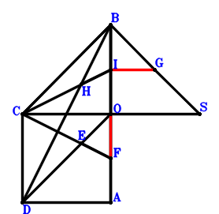
\(\because \) BCDO is a parallelogram \(\therefore \small\overrightarrow{OD}=- \small\overrightarrow{OB} + \small\overrightarrow{OC}\).\(\because \) E is the centroid of △BDA \(\therefore \small\overrightarrow{OE}=\dfrac{\small\overrightarrow{OA}}{3} + \dfrac{\small\overrightarrow{OB}}{3} + \dfrac{\small\overrightarrow{OD}}{3}=\dfrac{\small\overrightarrow{OA}}{3} + \dfrac{\small\overrightarrow{OC}}{3}\).\(\because \) C, E, F are collinear and CF=3EF \(\therefore \small\overrightarrow{OF}=- \dfrac{\small\overrightarrow{OC}}{2} + \dfrac{3 \small\overrightarrow{OE}}{2}=\dfrac{\small\overrightarrow{OA}}{2}\).\(\because \) G is the midpoint of BS \(\therefore \small\overrightarrow{OG}=\dfrac{\small\overrightarrow{OB}}{2} + \dfrac{\small\overrightarrow{OS}}{2}\).\(\because \) H is the centroid of △BCO \(\therefore \small\overrightarrow{OH}=\dfrac{\small\overrightarrow{OB}}{3} + \dfrac{\small\overrightarrow{OC}}{3}\).\(\because \) C, H, I are collinear and CI=3HI \(\therefore \small\overrightarrow{OI}=- \dfrac{\small\overrightarrow{OC}}{2} + \dfrac{3 \small\overrightarrow{OH}}{2}=\dfrac{\small\overrightarrow{OB}}{2}\).\(\because \) OS=OA \( \therefore- \small\overrightarrow{OA}^{2} + \small\overrightarrow{OS}^{2}=0.\)In conclusion, \(- \small\overrightarrow{GI}^{2} + \small\overrightarrow{OF}^{2}=\small\overrightarrow{OF}^{2} - \left(- \small\overrightarrow{OG} + \small\overrightarrow{OI}\right)^{2}=\dfrac{\small\overrightarrow{OA}^{2}}{4} - \dfrac{\small\overrightarrow{OS}^{2}}{4}=0\), that is, OF=IG.
Exercise 3941： Let DBAC be a parallelogram. E is the centroid of △BOC. G is the centroid of △BSC. D, E, F are collinear and DF=3EF. OS=OA. Prove that 2OF=3EG.
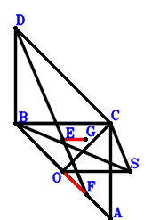
\(\because \) DBAC is a parallelogram \(\therefore \small\overrightarrow{OD}=- \small\overrightarrow{OA} + \small\overrightarrow{OB} + \small\overrightarrow{OC}\).\(\because \) E is the centroid of △BOC \(\therefore \small\overrightarrow{OE}=\dfrac{\small\overrightarrow{OB}}{3} + \dfrac{\small\overrightarrow{OC}}{3}\).\(\because \) D, E, F are collinear and DF=3EF \(\therefore \small\overrightarrow{OF}=\dfrac{\small\overrightarrow{OA}}{2} - \dfrac{\small\overrightarrow{OB}}{2} - \dfrac{\small\overrightarrow{OC}}{2} + \dfrac{3 \small\overrightarrow{OE}}{2}=\dfrac{\small\overrightarrow{OA}}{2}\).\(\because \) G is the centroid of △BSC \(\therefore \small\overrightarrow{OG}=\dfrac{\small\overrightarrow{OB}}{3} + \dfrac{\small\overrightarrow{OC}}{3} + \dfrac{\small\overrightarrow{OS}}{3}\).\(\because \) OS=OA \( \therefore- \small\overrightarrow{OA}^{2} + \small\overrightarrow{OS}^{2}=0.\)In conclusion, \(- \dfrac{9 \small\overrightarrow{GE}^{2}}{4} + \small\overrightarrow{OF}^{2}=\small\overrightarrow{OF}^{2} - \dfrac{9 \left(\small\overrightarrow{OE} - \small\overrightarrow{OG}\right)^{2}}{4}=\dfrac{\small\overrightarrow{OA}^{2}}{4} - \dfrac{\small\overrightarrow{OS}^{2}}{4}=0\), that is, 2OF=3EG.
Exercise 3949： Let CSOG be a parallelogram. BDEA is a trapezoid with BA//DE and BA=3DE. D is the centroid of △COB. C, E, F are collinear and CF=3EF. SO=OA. Prove that CG=2OF.
\(\because \) D is the centroid of △COB \(\therefore \small\overrightarrow{OD}=\dfrac{\small\overrightarrow{OB}}{3} + \dfrac{\small\overrightarrow{OC}}{3}\).\(\because \) BA//DE and BA=3DE \(\therefore \small\overrightarrow{OE}=\dfrac{\small\overrightarrow{OA}}{3} + \dfrac{\small\overrightarrow{OC}}{3}\).\(\because \) C, E, F are collinear and CF=3EF \(\therefore \small\overrightarrow{OF}=- \dfrac{\small\overrightarrow{OC}}{2} + \dfrac{3 \small\overrightarrow{OE}}{2}=\dfrac{\small\overrightarrow{OA}}{2}\).\(\because \) CSOG is a parallelogram \(\therefore \small\overrightarrow{OG}=\small\overrightarrow{OC} - \small\overrightarrow{OS}\).\(\because \) SO=OA \( \therefore- \small\overrightarrow{OA}^{2} + \small\overrightarrow{OS}^{2}=0.\)In conclusion, \(- \dfrac{\small\overrightarrow{CG}^{2}}{4} + \small\overrightarrow{OF}^{2}=\small\overrightarrow{OF}^{2} - \dfrac{\left(- \small\overrightarrow{OC} + \small\overrightarrow{OG}\right)^{2}}{4}=\dfrac{\small\overrightarrow{OA}^{2}}{4} - \dfrac{\small\overrightarrow{OS}^{2}}{4}=0\), that is, CG=2OF.
Exercise 3968： Let GBSC and GBOH be parallelograms. CDEO is a trapezoid with CO//DE and CO=3DE. D is the centroid of △CBA. B, E, F are collinear and BF=3EF. SO=OA. Prove that CH=2OF.
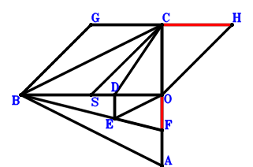
\(\because \) D is the centroid of △CBA \(\therefore \small\overrightarrow{OD}=\dfrac{\small\overrightarrow{OA}}{3} + \dfrac{\small\overrightarrow{OB}}{3} + \dfrac{\small\overrightarrow{OC}}{3}\).\(\because \) CO//DE and CO=3DE \(\therefore \small\overrightarrow{OE}=\dfrac{\small\overrightarrow{OA}}{3} + \dfrac{\small\overrightarrow{OB}}{3}\).\(\because \) B, E, F are collinear and BF=3EF \(\therefore \small\overrightarrow{OF}=- \dfrac{\small\overrightarrow{OB}}{2} + \dfrac{3 \small\overrightarrow{OE}}{2}=\dfrac{\small\overrightarrow{OA}}{2}\).\(\because \) GBSC is a parallelogram \(\therefore \small\overrightarrow{OG}=\small\overrightarrow{OB} + \small\overrightarrow{OC} - \small\overrightarrow{OS}\).\(\because \) GBOH is a parallelogram \(\therefore \small\overrightarrow{OH}=\small\overrightarrow{OC} - \small\overrightarrow{OS}\).\(\because \) SO=OA \( \therefore- \small\overrightarrow{OA}^{2} + \small\overrightarrow{OS}^{2}=0.\)In conclusion, \(- \dfrac{\small\overrightarrow{CH}^{2}}{4} + \small\overrightarrow{OF}^{2}=\small\overrightarrow{OF}^{2} - \dfrac{\left(- \small\overrightarrow{OC} + \small\overrightarrow{OH}\right)^{2}}{4}=\dfrac{\small\overrightarrow{OA}^{2}}{4} - \dfrac{\small\overrightarrow{OS}^{2}}{4}=0\), that is, CH=2OF.
Exercise 3978： Let GSOH be a trapezoid with SO//GH and SO=2GH. DBOE is a trapezoid with BO//DE and BO=3DE. D is the centroid of △CBA. C, E, F are collinear and CF=3EF. G is the midpoint of BC. SO=OA. Prove that OF=GH.
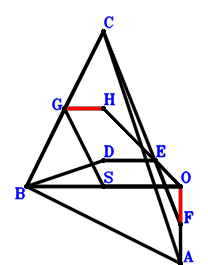
\(\because \) D is the centroid of △CBA \(\therefore \small\overrightarrow{OD}=\dfrac{\small\overrightarrow{OA}}{3} + \dfrac{\small\overrightarrow{OB}}{3} + \dfrac{\small\overrightarrow{OC}}{3}\).\(\because \) BO//DE and BO=3DE \(\therefore \small\overrightarrow{OE}=\dfrac{\small\overrightarrow{OA}}{3} + \dfrac{\small\overrightarrow{OC}}{3}\).\(\because \) C, E, F are collinear and CF=3EF \(\therefore \small\overrightarrow{OF}=- \dfrac{\small\overrightarrow{OC}}{2} + \dfrac{3 \small\overrightarrow{OE}}{2}=\dfrac{\small\overrightarrow{OA}}{2}\).\(\because \) G is the midpoint of BC \(\therefore \small\overrightarrow{OG}=\dfrac{\small\overrightarrow{OB}}{2} + \dfrac{\small\overrightarrow{OC}}{2}\).\(\because \) SO//GH and SO=2GH \(\therefore \small\overrightarrow{OH}=\dfrac{\small\overrightarrow{OB}}{2} + \dfrac{\small\overrightarrow{OC}}{2} - \dfrac{\small\overrightarrow{OS}}{2}\).\(\because \) SO=OA \( \therefore- \small\overrightarrow{OA}^{2} + \small\overrightarrow{OS}^{2}=0.\)In conclusion, \(- \small\overrightarrow{GH}^{2} + \small\overrightarrow{OF}^{2}=\small\overrightarrow{OF}^{2} - \left(- \small\overrightarrow{OG} + \small\overrightarrow{OH}\right)^{2}=\dfrac{\small\overrightarrow{OA}^{2}}{4} - \dfrac{\small\overrightarrow{OS}^{2}}{4}=0\), that is, OF=GH.
Exercise 4045： Let HBSC be a parallelogram. CBDE is a trapezoid with BC//DE and BC=3DE. D is the centroid of △ABO. C, E, F are collinear and CF=3EF. I, G are the midpoints of HO, BC, respectively. SO=AO. Prove that FO=GI.
\(\because \) D is the centroid of △ABO \(\therefore \small\overrightarrow{OD}=\dfrac{\small\overrightarrow{OA}}{3} + \dfrac{\small\overrightarrow{OB}}{3}\).\(\because \) BC//DE and BC=3DE \(\therefore \small\overrightarrow{OE}=\dfrac{\small\overrightarrow{OA}}{3} + \dfrac{\small\overrightarrow{OC}}{3}\).\(\because \) C, E, F are collinear and CF=3EF \(\therefore \small\overrightarrow{OF}=- \dfrac{\small\overrightarrow{OC}}{2} + \dfrac{3 \small\overrightarrow{OE}}{2}=\dfrac{\small\overrightarrow{OA}}{2}\).\(\because \) G is the midpoint of BC \(\therefore \small\overrightarrow{OG}=\dfrac{\small\overrightarrow{OB}}{2} + \dfrac{\small\overrightarrow{OC}}{2}\).\(\because \) HBSC is a parallelogram \(\therefore \small\overrightarrow{OH}=\small\overrightarrow{OB} + \small\overrightarrow{OC} - \small\overrightarrow{OS}\).\(\because \) I is the midpoint of HO \(\therefore \small\overrightarrow{OI}=\dfrac{\small\overrightarrow{OH}}{2}=\dfrac{\small\overrightarrow{OB}}{2} + \dfrac{\small\overrightarrow{OC}}{2} - \dfrac{\small\overrightarrow{OS}}{2}\).\(\because \) SO=AO \( \therefore- \small\overrightarrow{OA}^{2} + \small\overrightarrow{OS}^{2}=0.\)In conclusion, \(- \small\overrightarrow{GI}^{2} + \small\overrightarrow{OF}^{2}=\small\overrightarrow{OF}^{2} - \left(- \small\overrightarrow{OG} + \small\overrightarrow{OI}\right)^{2}=\dfrac{\small\overrightarrow{OA}^{2}}{4} - \dfrac{\small\overrightarrow{OS}^{2}}{4}=0\), that is, FO=GI.